Sección 2 Fundamentos de Teoría de Redes
2.1 Grafos: matemáticas de las redes.
Primero, tenemos que importar algunas de las librerías básicas.
networkxes la librería básica de redes en Python.pandasynumpyson básicas para manipulación de bases de datos y arreglos.matplotlib.pyplotes la básica para hacer plots.
Una de las formas de definir una gráfica en Python es crear primero un objeto gráfica y después ir agregando los vértices y aristas. Al crear el objeto, se generará una gráfica vacía.
Podemos agregar nodos de uno en uno, por medio de una lista y las aristas es similar, podemos especificar entre que nodos están.
# Un solo nodo
G.add_node(1)
# Dos nodos como lista
G.add_nodes_from([2,3])
# Arista entre nodo 1 y 2
G.add_edge(1, 2)
# Arista entre nodo 2 y 3
e = (2,3)
G.add_edge(*e)Algo que queremos hacer, es poder visualizar estas gráficas.
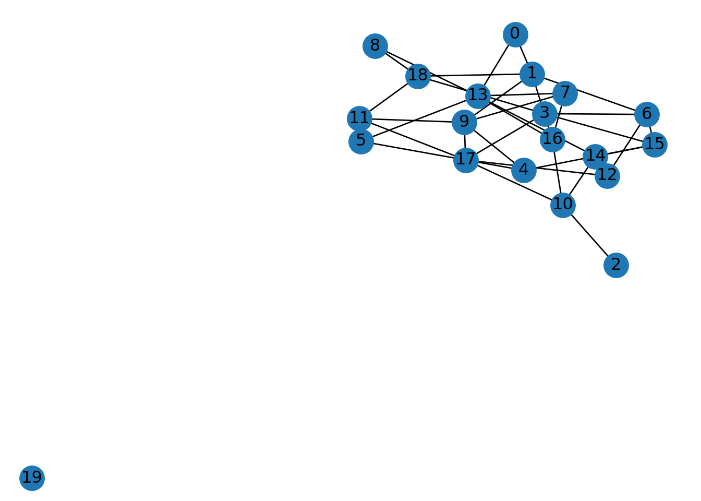
Vamos a crear otras gráficas.
MyGraph = nx.Graph()
MyGraph.add_edge('Antonio', 'Valentina')
MyGraph.add_edge('Antonio', 'Claudia')
MyGraph.add_edge('Claudia','Valentina')
print(MyGraph) # Imprimir información de la gráfica## Graph with 3 nodes and 3 edges## Número de vértices 3## Número de aristas 3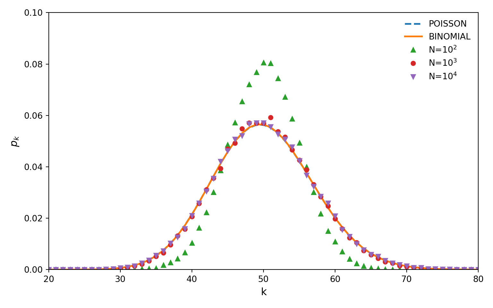
Existen varios atributos que podemos usar para dibujar la red. Por ejemplo:nx.draw_circular, nx.draw_planar, nx.draw_random, nx.draw_spectral, nx.draw_spring, nx.draw_shell.
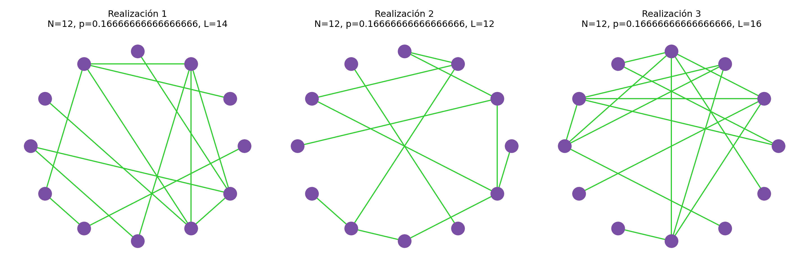
Vamos a construir una red simétrica. Los pesos pueden añadir intensidad de la relación en los nodos, cada arista tendrá un peso. Para gráficas dirigidas se usa nx.DiGraph().
DG = nx.DiGraph()
# Agregamos nodos y aristas
DG.add_nodes_from(["A", "B", "C"])
DG.add_edges_from([("A", "B"), ("B", "C")])
# Dibujamos la gráfica
nx.draw_networkx(DG, font_size=7)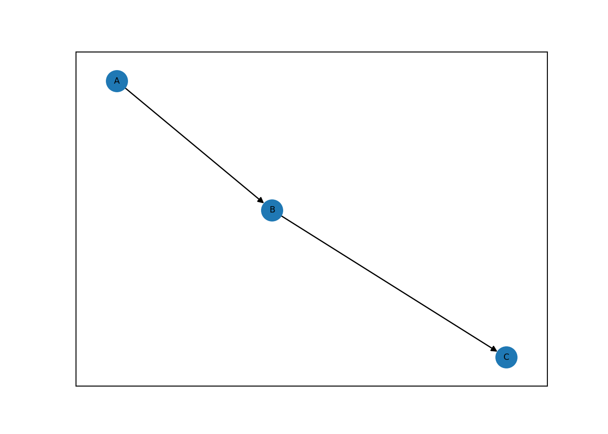
Y podemos crear una gráfica con pesos como sigue.
WG = nx.Graph()
# Agregamos nodos y aristas
WG.add_edge("A", "B", weight=3)
WG.add_edge("B", "C", weight=2)
WG.add_edge("C", "A", weight=1)
# Dibujamos la gráfica
nx.draw_networkx(WG, font_size=7)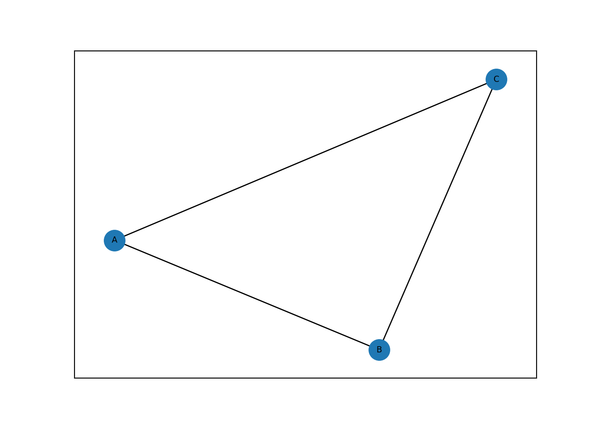
Sin embargo, si queremos que salga el peso, hay que modificar la forma de dibujarla.
WG2 = nx.Graph()
WG2.add_node("A", pos=(1,1))
WG2.add_node("B", pos=(2,2))
WG2.add_node("C", pos=(1,0))
WG2.add_edge("A","B",weight=0.5)
WG2.add_edge("A","C",weight=9.8)
pos=nx.get_node_attributes(WG2,'pos')
nx.draw(WG2,pos)
labels = nx.get_edge_attributes(WG2,'weight')
nx.draw_networkx_edge_labels(WG2,pos,edge_labels=labels)## {('A', 'B'): Text(1.499993978679413, 1.499993978679413, '0.5'), ('A', 'C'): Text(1.0, 0.49999868113081897, '9.8')}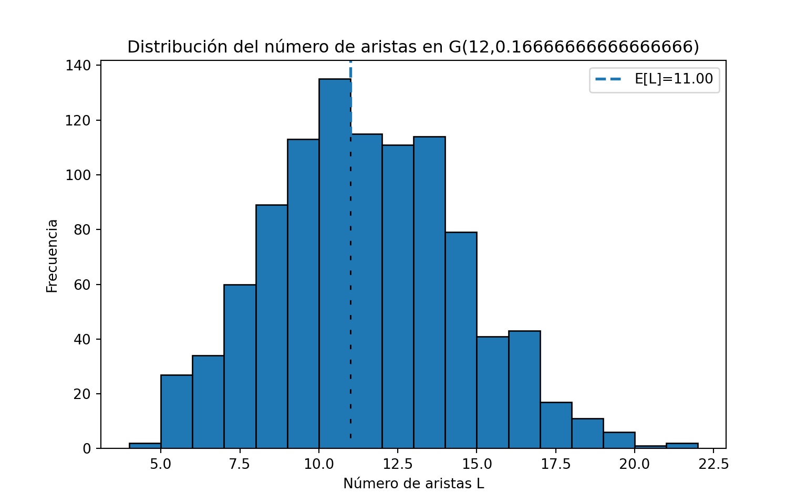
Si tenemos ya una base de datos, vista como un data frame, podemos construir su gráfica también tomando la información de esta.
df = pd.DataFrame({ 'from':['A', 'B', 'C','A'], 'to':['D', 'A', 'E','C']})
G=nx.from_pandas_edgelist(df, 'from', 'to')
nx.draw(G, with_labels=True)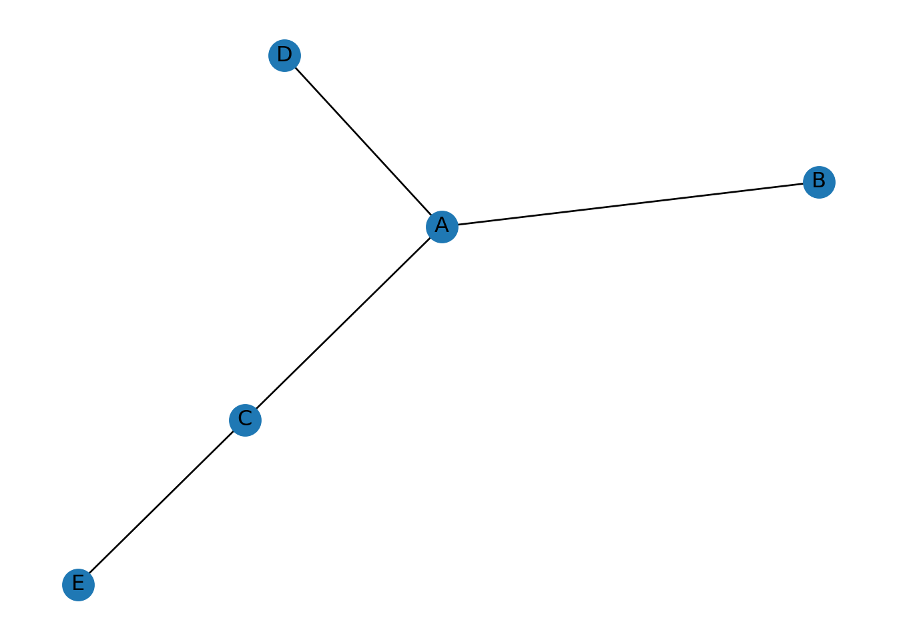
2.1.1 Matriz de Adyacencia
Las gráficas en networkx, las podemos crear también a partir de su matriz de adyacencia.
Supongamos que tenemos la siguiente matriz de adyacencia de una gráfica.
adjacency_matrix = np.array([[0, 1, 1, 0], [1, 0, 0, 1], [1, 0, 0, 0], [1, 1, 0, 0]])
print(adjacency_matrix)## [[0 1 1 0]
## [1 0 0 1]
## [1 0 0 0]
## [1 1 0 0]]Vamos a usar esta matriz para crear la gráfica.
## [(0, 1), (0, 2), (0, 3), (1, 3)]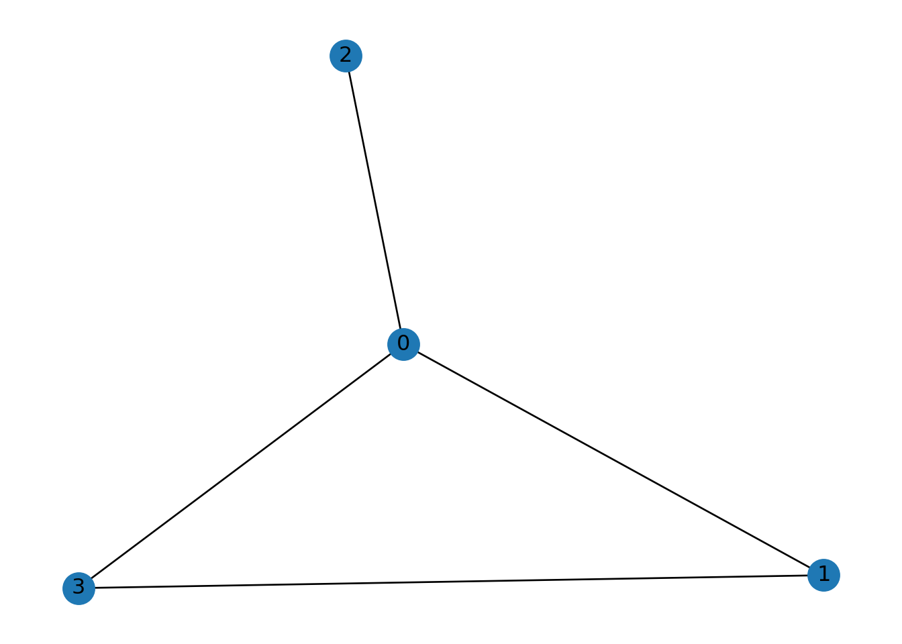
Y esta misma matriz, la podríamos usar para generar la red dirigida.
## [(0, 1), (0, 2), (1, 0), (1, 3), (2, 0), (3, 0), (3, 1)]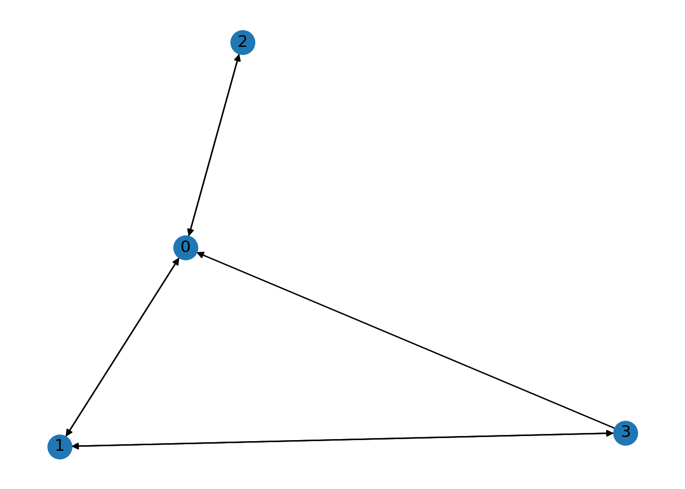
2.1.2 Redes con pesos
En muchas aplicaciones, no basta saber si dos nodos están conectados: queremos medir intensidad.
Ejemplo: ciudades conectadas por tiempo de traslado.
G = nx.Graph()
edges = [
("CDMX", "Querétaro", 2.5),
("CDMX", "Puebla", 1.8),
("Querétaro", "San Luis", 3.0),
("Puebla", "Veracruz", 2.2)
]
G.add_weighted_edges_from(edges)
pos = nx.spring_layout(G, seed=42)
nx.draw(G, pos, with_labels=True, node_size=2000, node_color="lightblue")
labels = nx.get_edge_attributes(G, "weight")
nx.draw_networkx_edge_labels(G, pos, edge_labels=labels)## {('CDMX', 'Querétaro'): Text(-0.03804987394440071, 0.29044345796704585, '2.5'), ('CDMX', 'Puebla'): Text(0.03310940855012143, -0.2517211871628955, '1.8'), ('Querétaro', 'San Luis'): Text(-0.09868076835080415, 0.7517180744260015, '3.0'), ('Puebla', 'Veracruz'): Text(0.10107661635624102, -0.7703266027551717, '2.2')}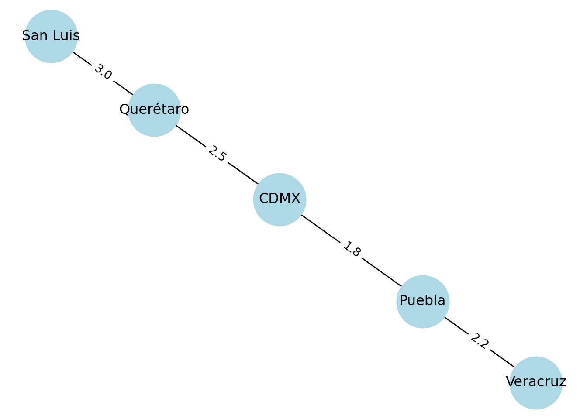
nx.spring_layout: Cuando dibujas una red, necesitas decidir dónde se coloca cada nodo en el plano (coordenadas (x,y)). nx.spring_layout(G) calcula esas posiciones automáticamente usando un modelo tipo resortes:
cada arista actúa como un resorte que “jala” a sus extremos para acercarlos,
los nodos se repelen entre sí para que no queden amontonados,
el algoritmo busca una configuración “bonita” (pocas intersecciones, distancias razonables).
No cambia el grafo, solo produce un diccionario de posiciones.
## {'CDMX': array([-0.00479153, 0.03721578]), 'Querétaro': array([-0.07130957, 0.54368146]), 'Puebla': array([ 0.07100945, -0.54065133]), 'San Luis': array([-0.12605188, 0.95975409]), 'Veracruz': array([ 0.13114354, -1. ])}Ejercicio: Comparar con nx.circular_layout(G) para ver que “layout” = regla de colocación.
2.1.3 Redes dirigidas
En una red dirigida las aristas tienen orientación.
Ejemplo: prerequisitos de materias.
DG = nx.DiGraph()
DG.add_edge("Álgebra I", "Álgebra II")
DG.add_edge("Álgebra II", "Geometría")
DG.add_edge("Cálculo I", "Cálculo II")
pos = nx.spring_layout(DG, seed=10)
nx.draw(DG, pos,
with_labels=True,
node_size=2500,
node_color="lightcoral",
arrows=True,
arrowsize=20)
plt.title("Red dirigida (prerrequisitos)")
plt.show()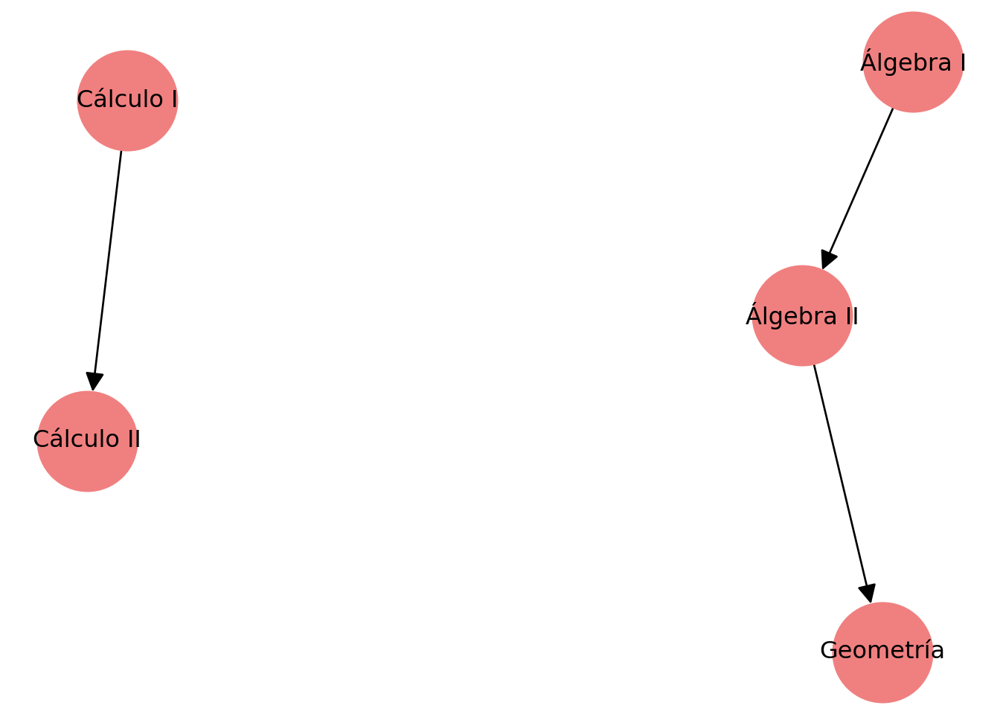
Grado en redes dirigidas
In-degree: número de aristas que llegan.
Out-degree: número de aristas que salen.
## In-degree: {'Álgebra I': 0, 'Álgebra II': 1, 'Geometría': 1, 'Cálculo I': 0, 'Cálculo II': 1}## Out-degree: {'Álgebra I': 1, 'Álgebra II': 1, 'Geometría': 0, 'Cálculo I': 1, 'Cálculo II': 0}2.1.4 Graficas acíclicas
Un grafo dirigido es acíclico si no contiene ciclos.
DAG = nx.DiGraph()
DAG.add_edges_from([
(1,2),
(1,3),
(2,4),
(3,4)
])
print("¿Es DAG?", nx.is_directed_acyclic_graph(DAG))## ¿Es DAG? TrueOrdenamiento topológico:
## [1, 2, 3, 4]Si numeramos los vértices según ese orden, la matriz de adyacencia queda triangular superior.
En un grafo dirigido sin ciclos, existe un orden de los vértices tal que todas las aristas van “hacia adelante” en ese orden. nx.topological_sort devuelve ese orden.
## [1, 2, 3, 4]Si reetiquetas/ordenas los vértices según ese orden y construyes la matriz de adyacencia en ese orden, la matriz queda triangular superior. Por ejemplo:
DAG = nx.DiGraph()
DAG.add_edges_from([(1,2),(1,3),(2,4),(3,4)])
order = list(nx.topological_sort(DAG))
print("Orden topológico:", order)## Orden topológico: [1, 2, 3, 4]## Matriz en ese orden:
## [[0 1 1 0]
## [0 0 0 1]
## [0 0 0 1]
## [0 0 0 0]]## [[0 0 0 0]
## [1 0 0 0]
## [1 0 0 0]
## [0 1 1 0]]2.1.5 Redes k-regulares
Un grafo es \(k\)-regular si todos los vértices tienen grado \(k\).
R = nx.random_regular_graph(d=3, n=8)
nx.draw(R, with_labels=True, node_size=1500)
plt.title("Grafo 3-regular")
plt.show()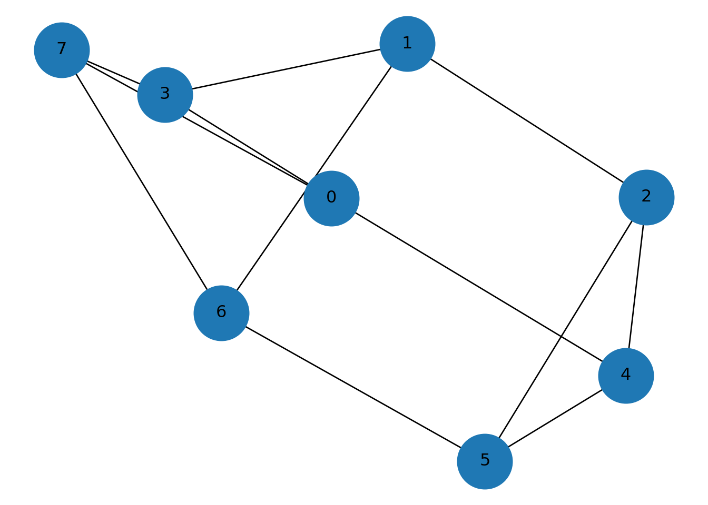
2.1.6 Multigrafos (multiaristas)
En algunos sistemas pueden existir varias relaciones entre dos nodos.
Ejemplo: dos actores que colaboran en varias películas.
## 0## 1## 2## Número de aristas entre A y B: 3Y para visualziarla:
pos = nx.spring_layout(MG, seed=3)
nx.draw(MG, pos, with_labels=True, node_size=2000)
plt.title("MultiGraph")
plt.show()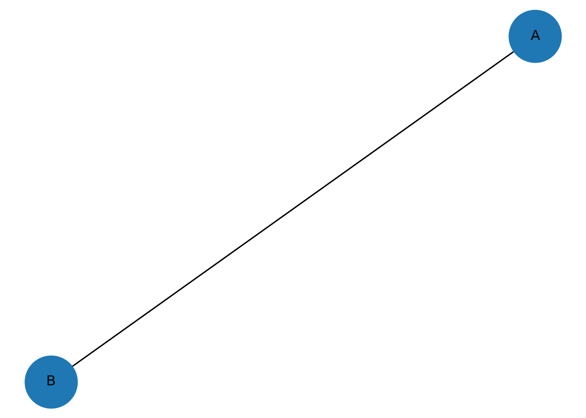
Para que se vea que hay varias aristas entre los mismos nodos, usamos connectionstyle con distintos radios.
## 0## 1## 2## 0pos = nx.spring_layout(MG, seed=2)
# Dibujo de nodos
nx.draw_networkx_nodes(MG, pos, node_size=2000, node_color="lightgreen")
nx.draw_networkx_labels(MG, pos)## {'A': Text(0.8284668313118051, -0.8726270765014832, 'A'), 'B': Text(0.12093500309378266, -0.1273729234985168, 'B'), 'C': Text(-0.949401834405588, 1.0, 'C')}# Dibujo de aristas: si son paralelas, usamos curvaturas distintas
edges = list(MG.edges(keys=True))
for i, (u, v, k) in enumerate(edges):
rad = 0.15 * (i % 3) # radios 0, 0.15, 0.30 (repite)
nx.draw_networkx_edges(
MG, pos,
edgelist=[(u, v)],
width=2,
connectionstyle=f"arc3,rad={rad}",
edge_color="gray"
)
plt.title("MultiGraph con multiaristas (arcos curvos)")
plt.axis("off")## (np.float64(-1.0962567812307198), np.float64(0.9571815276728693), np.float64(-1.0082027056679594), np.float64(1.1546815676912536))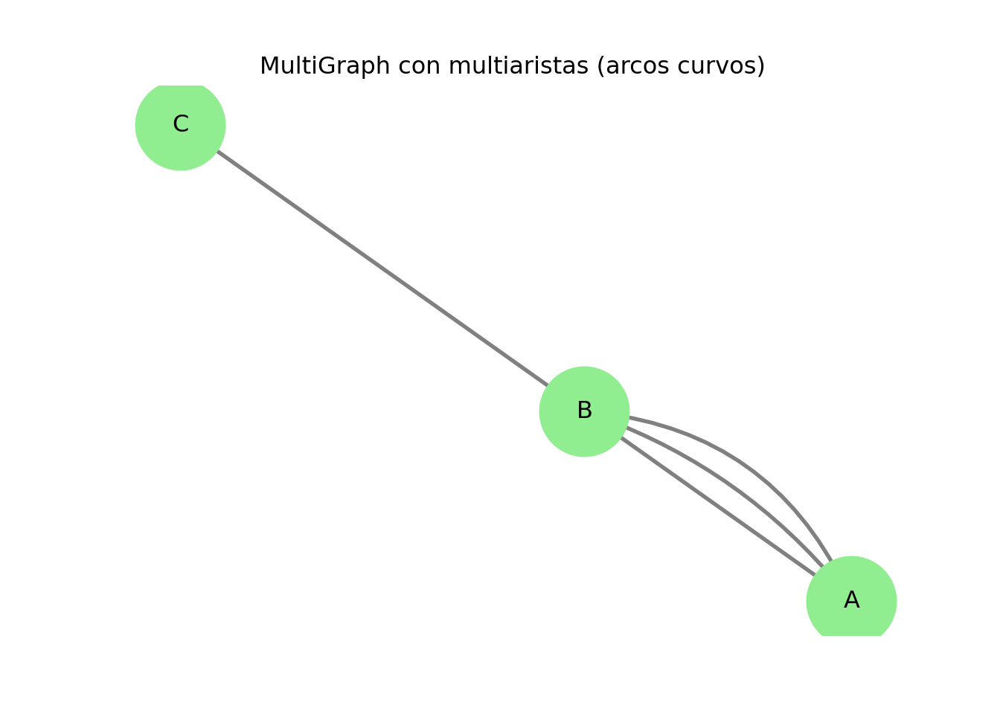
## Número de aristas A-B: 32.1.7 Loops (lazos)
Un loop es una arista de un nodo a sí mismo.
## Grados: {'A': 3, 'B': 1}Importante:
En grafos no dirigidos, un loop contribuye 2 al grado.
NetworkX dibuja loops como “arcos” pequeños, pero a veces quedan discretos.
G = nx.Graph()
G.add_edges_from([("A","A"), ("A","B"), ("B","C"), ("C","C")]) # loops en A y C
pos = nx.spring_layout(G, seed=4)
nx.draw(G, pos, with_labels=True, node_size=2000, node_color="lightblue",
width=2, edge_color="gray")
plt.title("Grafo con loops en A y C")
plt.show()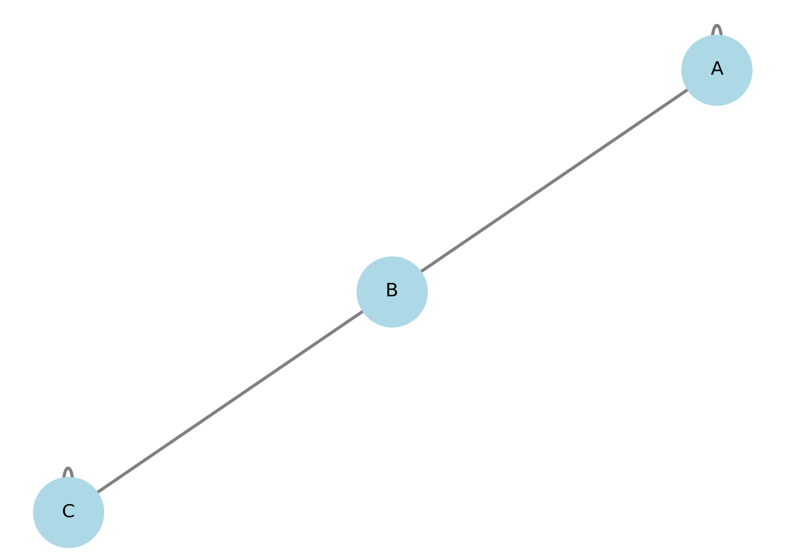
También podemos listarlos:
## Loops: [('A', 'A'), ('C', 'C')]2.1.8 Redes bipartitas
Ejemplo: películas y actores.
data = {
"Movie": ["Matrix","Matrix","Titanic","Titanic","Inception"],
"Actor": ["Keanu","Carrie","Leonardo","Kate","Leonardo"]
}
df = pd.DataFrame(data)Vamos a construirla:
B = nx.Graph()
movies = df["Movie"].unique()
actors = df["Actor"].unique()
B.add_nodes_from(movies, bipartite=0)
B.add_nodes_from(actors, bipartite=1)
B.add_edges_from([(row.Movie,row.Actor)
for _,row in df.iterrows()])
nx.draw(B, with_labels=True, node_size=2000)
plt.title("Red bipartita")
plt.show()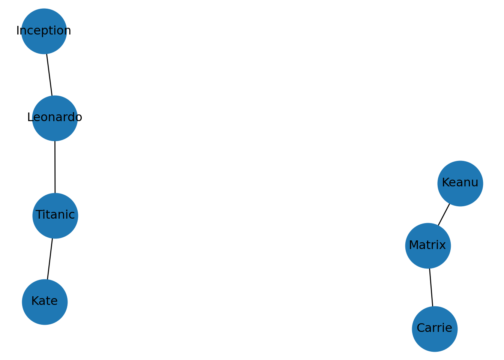
Otra forma de hacer el plot:
pos = nx.bipartite_layout(B, movies) # movies será la capa superior
nx.draw(B, pos,
with_labels=True,
node_size=2000,
node_color="lightblue")
plt.title("Red bipartita (películas arriba, actores abajo)")
plt.show()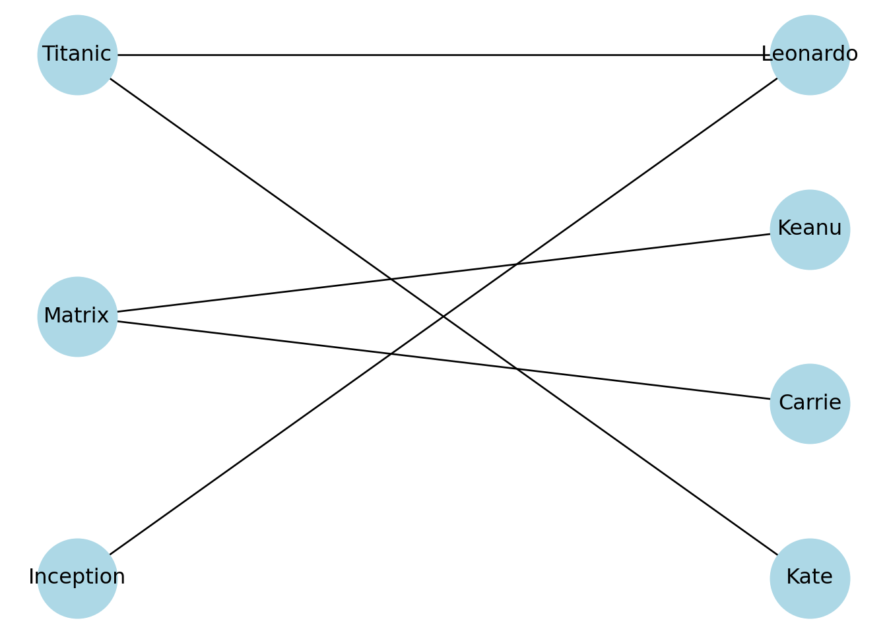
Y se puede “forzar” también esto:
movies = list(df["Movie"].unique())
actors = list(df["Actor"].unique())
pos = {}
# Películas arriba (y=1)
for i, movie in enumerate(movies):
pos[movie] = (i, 1)
# Actores abajo (y=0)
for i, actor in enumerate(actors):
pos[actor] = (i, 0)
nx.draw(B, pos,
with_labels=True,
node_size=2000,
node_color="lightyellow",
edge_color="gray")
plt.title("Red bipartita forzada (arriba películas, abajo actores)")
plt.ylim(-0.5, 1.5)## (-0.5, 1.5)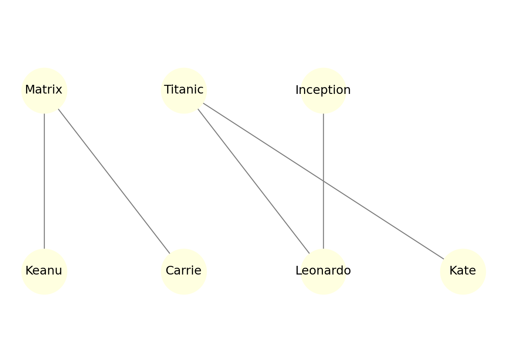
Otra forma más, coloreando cada capa:
color_map = []
for node in B.nodes():
if node in movies:
color_map.append("lightcoral")
else:
color_map.append("lightblue")
nx.draw(B, pos,
with_labels=True,
node_color=color_map,
node_size=2000)
plt.title("Red bipartita con capas diferenciadas")
plt.show()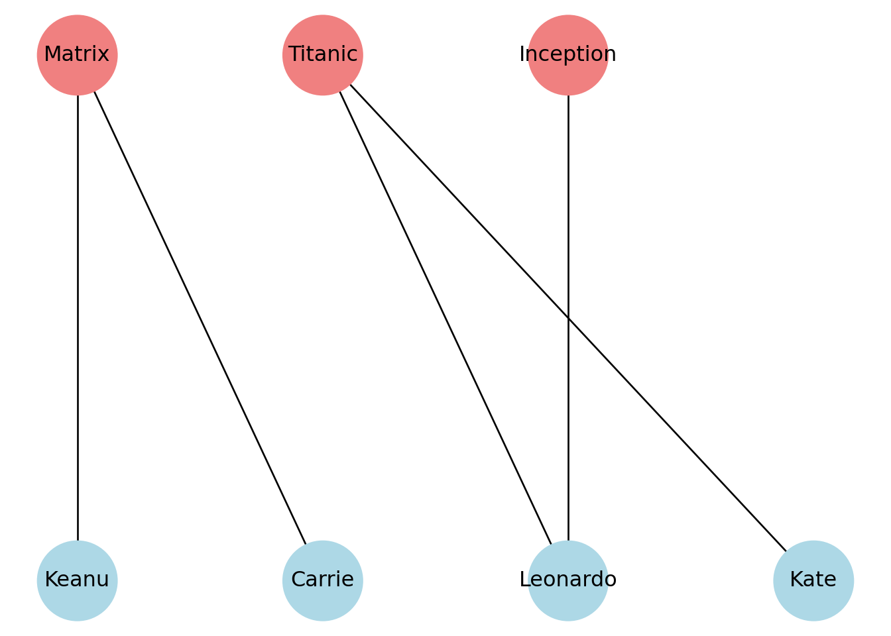
2.1.8.1 Matriz de incidencia
B_matrix = np.zeros((len(movies), len(actors)))
for _,row in df.iterrows():
i = list(movies).index(row.Movie)
j = list(actors).index(row.Actor)
B_matrix[i,j] = 1
print(B_matrix)## [[1. 1. 0. 0.]
## [0. 0. 1. 1.]
## [0. 0. 1. 0.]]2.1.8.2 Proyección one-mode
## [[1. 1. 0. 0.]
## [1. 1. 0. 0.]
## [0. 0. 2. 1.]
## [0. 0. 1. 1.]]from networkx.algorithms import bipartite
df = pd.DataFrame({
"Movie": ["Matrix","Matrix","Titanic","Titanic","Inception"],
"Actor": ["Keanu","Carrie","Leonardo","Kate","Leonardo"]
})
movies = list(df["Movie"].unique())
actors = list(df["Actor"].unique())
# Grafo bipartito
B = nx.Graph()
B.add_nodes_from(movies, bipartite=0)
B.add_nodes_from(actors, bipartite=1)
B.add_edges_from([(row.Movie, row.Actor) for _, row in df.iterrows()])
# Posiciones forzadas (películas arriba, actores abajo)
pos = {}
for i, m in enumerate(movies):
pos[m] = (i, 1)
for i, a in enumerate(actors):
pos[a] = (i, 0)
# Colores por capa
node_colors = ["lightcoral" if n in movies else "lightblue" for n in B.nodes()]
nx.draw(B, pos, with_labels=True, node_color=node_colors, node_size=2000, edge_color="gray")
plt.title("Bipartita: películas (arriba) – actores (abajo)")## Text(0.5, 1.0, 'Bipartita: películas (arriba) – actores (abajo)')## (-0.6, 1.6)## (np.float64(-0.31500000000000006), np.float64(3.315), np.float64(-0.6), np.float64(1.6))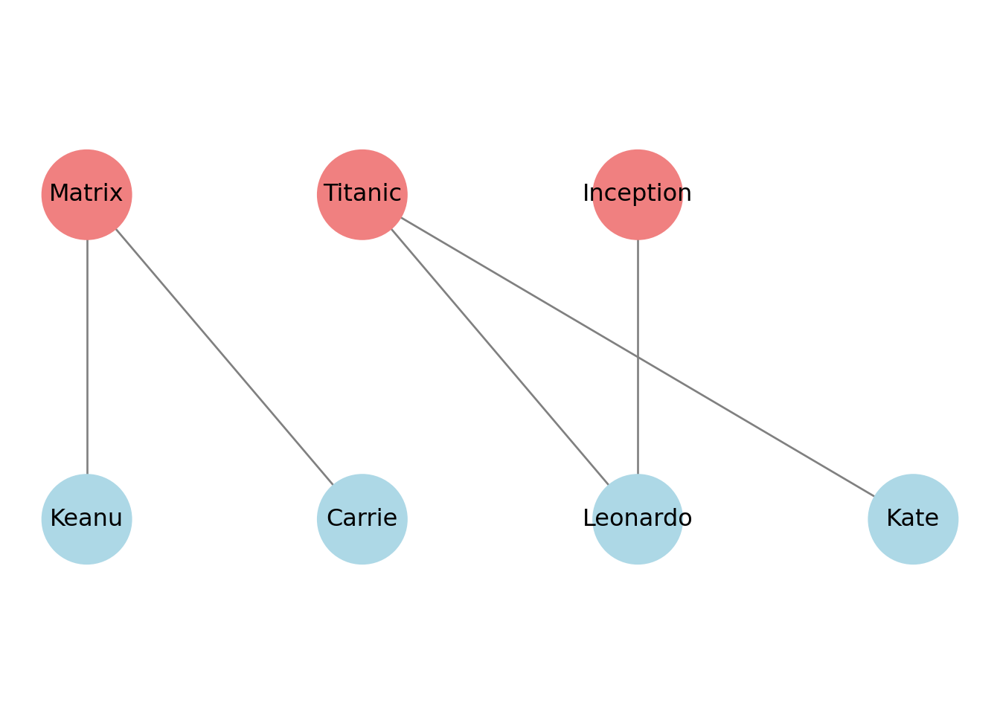
Vamos a crear las dos proyecciones.
2.1.8.3 Proyección one-mode a Actores
# Proyección a actores (one-mode)
P_actors = bipartite.weighted_projected_graph(B, actors)
print("Aristas (actor-actor) con pesos:", list(P_actors.edges(data=True)))## Aristas (actor-actor) con pesos: [('Keanu', 'Carrie', {'weight': 1}), ('Leonardo', 'Kate', {'weight': 1})]posA = nx.spring_layout(P_actors, seed=12)
nx.draw(P_actors, posA, with_labels=True, node_size=2000, node_color="lightblue", edge_color="gray")
# Etiquetas de peso
labelsA = nx.get_edge_attributes(P_actors, "weight")
nx.draw_networkx_edge_labels(P_actors, posA, edge_labels=labelsA)## {('Keanu', 'Carrie'): Text(-0.35775095734238305, 0.19487556024727604, '1'), ('Leonardo', 'Kate'): Text(0.3577635707881759, -0.19487292868700534, '1')}## Text(0.5, 1.0, 'Proyección one-mode: red de actores (peso = películas compartidas)')## (np.float64(-0.9375232965348552), np.float64(1.184108548539511), np.float64(-0.699174762922632), np.float64(1.0700229118070153))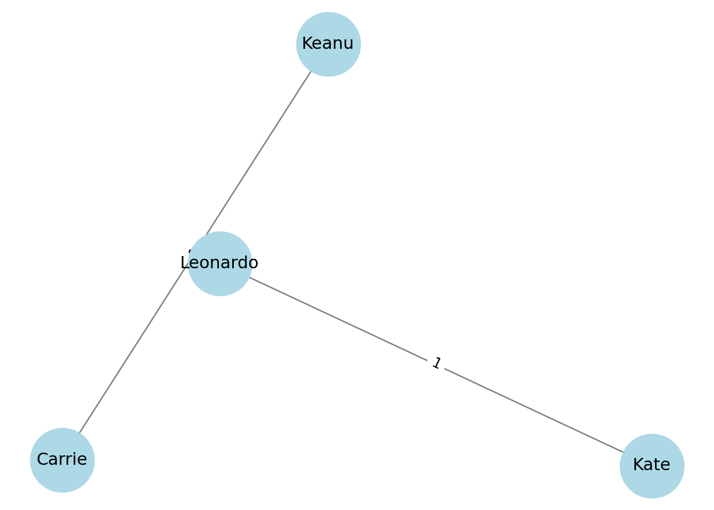
2.1.8.4 Proyección one-mode a PELÍCULAS
# Proyección a películas (one-mode)
P_movies = bipartite.weighted_projected_graph(B, movies)
print("Aristas (movie-movie) con pesos:", list(P_movies.edges(data=True)))## Aristas (movie-movie) con pesos: [('Titanic', 'Inception', {'weight': 1})]posM = nx.spring_layout(P_movies, seed=12)
nx.draw(P_movies, posM, with_labels=True, node_size=2300, node_color="lightcoral", edge_color="gray")
labelsM = nx.get_edge_attributes(P_movies, "weight")
nx.draw_networkx_edge_labels(P_movies, posM, edge_labels=labelsM)## {('Titanic', 'Inception'): Text(-0.5000007838353786, -0.32225756924227716, '1')}## Text(0.5, 1.0, 'Proyección one-mode: red de películas (peso = actores compartidos)')## (np.float64(-0.7473488387186665), np.float64(1.0832070875580317), np.float64(-0.6374842965559769), np.float64(0.7055652738076293))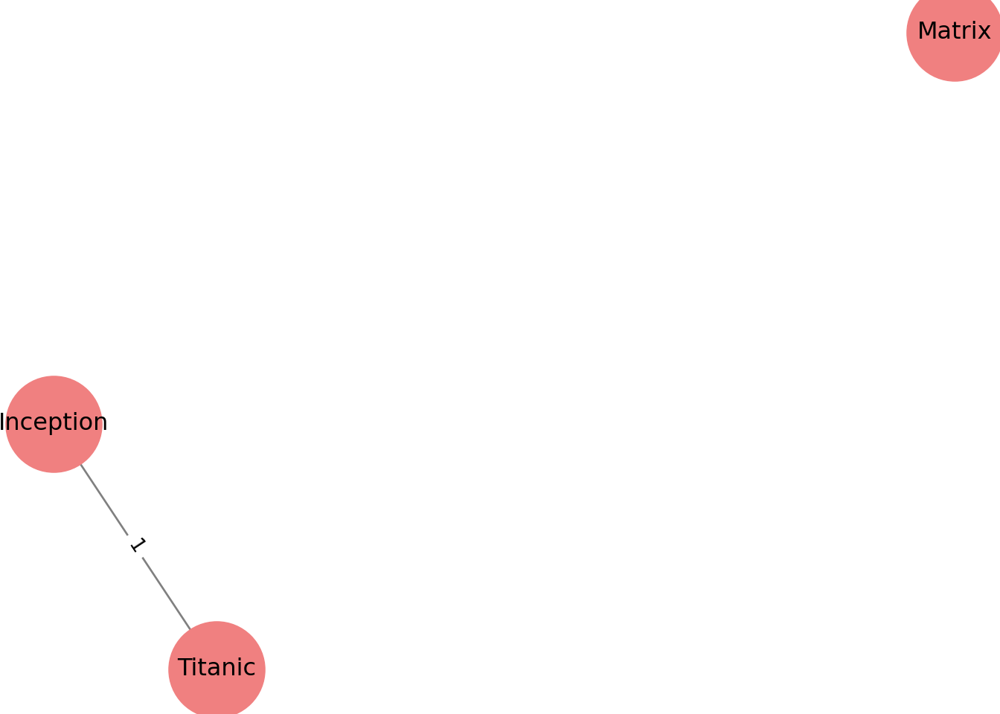
Si \(B\) es la matriz de incidencia (películas × actores), entonces:
\(B^TB\): co-ocurrencia actor–actor
\(BB^T\): co-ocurrencia película–película
# Matriz de incidencia: filas=películas, columnas=actores
Bmat = np.zeros((len(movies), len(actors)), dtype=int)
movie_idx = {m:i for i,m in enumerate(movies)}
actor_idx = {a:j for j,a in enumerate(actors)}
for _, row in df.iterrows():
Bmat[movie_idx[row.Movie], actor_idx[row.Actor]] = 1
print("B (películas x actores):\n", Bmat)## B (películas x actores):
## [[1 1 0 0]
## [0 0 1 1]
## [0 0 1 0]]W_actors = Bmat.T @ Bmat # actores x actores
W_movies = Bmat @ Bmat.T # películas x películas
print("\nB^T B (actores x actores):\n", W_actors)##
## B^T B (actores x actores):
## [[1 1 0 0]
## [1 1 0 0]
## [0 0 2 1]
## [0 0 1 1]]##
## B B^T (películas x películas):
## [[2 0 0]
## [0 2 1]
## [0 1 1]]2.1.9 Árboles
En Python, podemos crear árboles con la instrucción nx.path_graph(n)
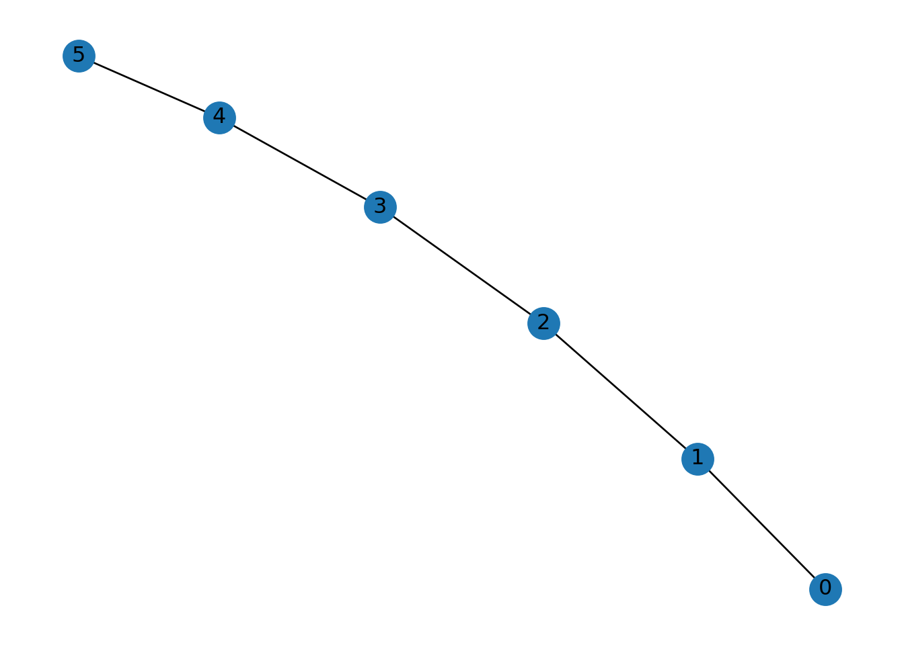
Podemos verificar si una gráfica dada es un árbol, al verificar la condición de que \(|E| = |V|-1\).
## Nodos: 6## Aristas: 5## ¿Cumple m = n-1? TrueEjercicio: Genera un cycle_graph(6). Verifica si es un árbol. Elimina una arista y vuelve a verificar.
Veamos otros algoritmos de networkx para generar árboles.
prefix_tree: Un “árbol de prefijos” representa la estructura de prefijos de las cadenas. Cada nodo representa un prefijo de alguna cadena. La raíz representa el prefijo vacío con hijos para los prefijos de una sola letra, que a su vez tienen hijos para cada prefijo de dos letras, comenzando con la letra correspondiente al nodo padre, y así sucesivamente. Añade artificialmente dos nodos, el nodo raíz y el nodoNIL. El nodo raíz siempre es 0 y su atributo de origen es “Ninguno”. Es el único nodo con grado de entrada cero. El nodo nulo siempre es -1 y su atributo de origen es “NIL”. Es el único nodo con grado de salida cero.
## [(0, 1), (1, 2), (1, 4), (2, -1), (2, 3), (3, -1), (4, -1)]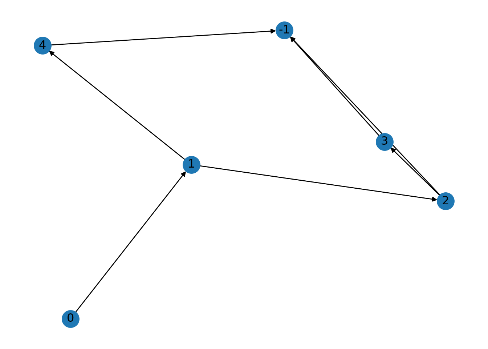
## False## True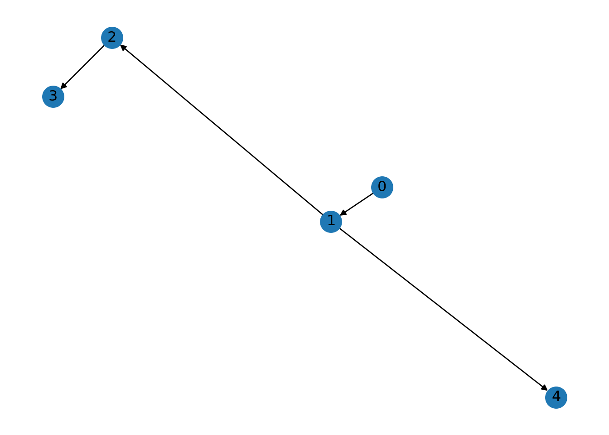
Podemos recuperar las trayectorias que teníamos.
paths = ["ab", "abs", "ad"]
T = nx.prefix_tree(paths)
root, NIL = 0, -1
recovered = []
for v in T.predecessors(NIL):
prefix = ""
while v != root:
prefix = str(T.nodes[v]["source"]) + prefix
v = next(T.predecessors(v)) # only one predecessor
recovered.append(prefix)
sorted(recovered)## ['ab', 'abs', 'ad']random_labeled_tree:
## True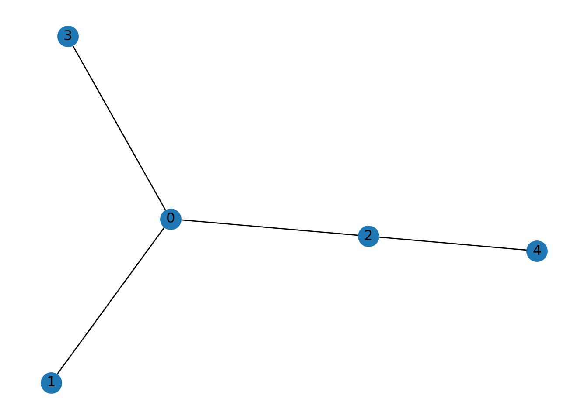
## True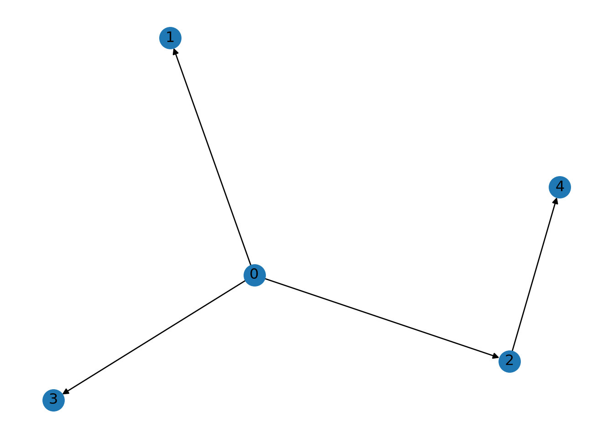
random_labeled_rooted_forest:
## True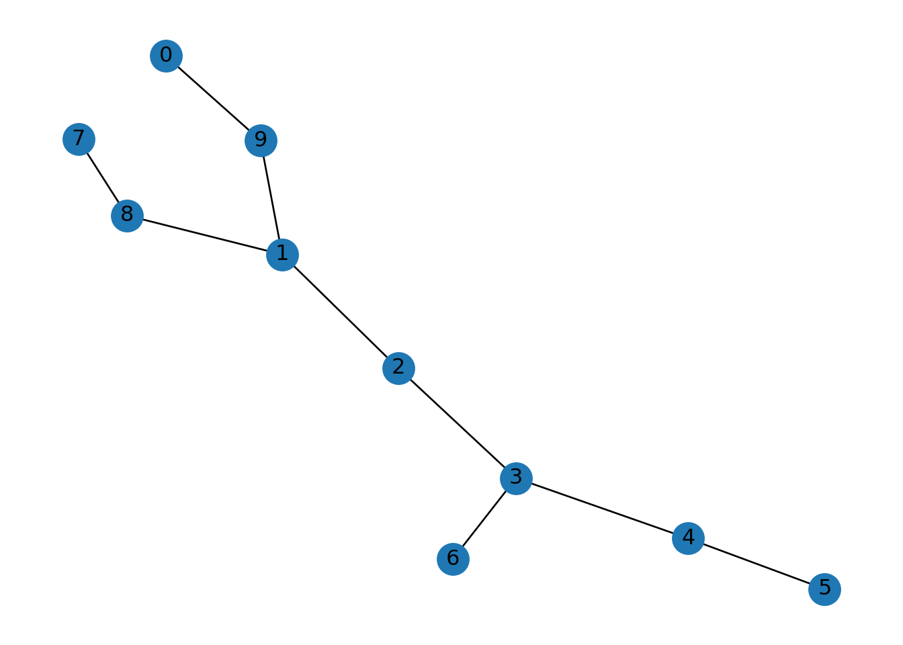
random_unlabeled_rooted_forest
2.1.10 Gráficas planas
Con la función nx.check_planarity(Graph_object) podemos verificar si una red es plana o no.
## (True, <networkx.algorithms.planarity.PlanarEmbedding object at 0x0000016FAF2B8E10>)G2 = nx.complete_graph(6)
nx.draw(G2, with_labels=True)
is_planar, P = nx.check_planarity(G2, counterexample=True)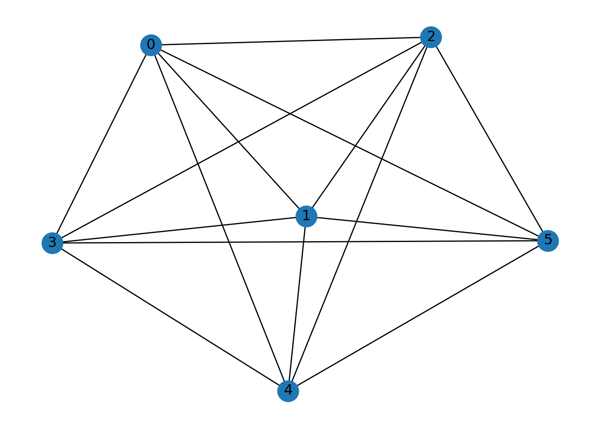
## False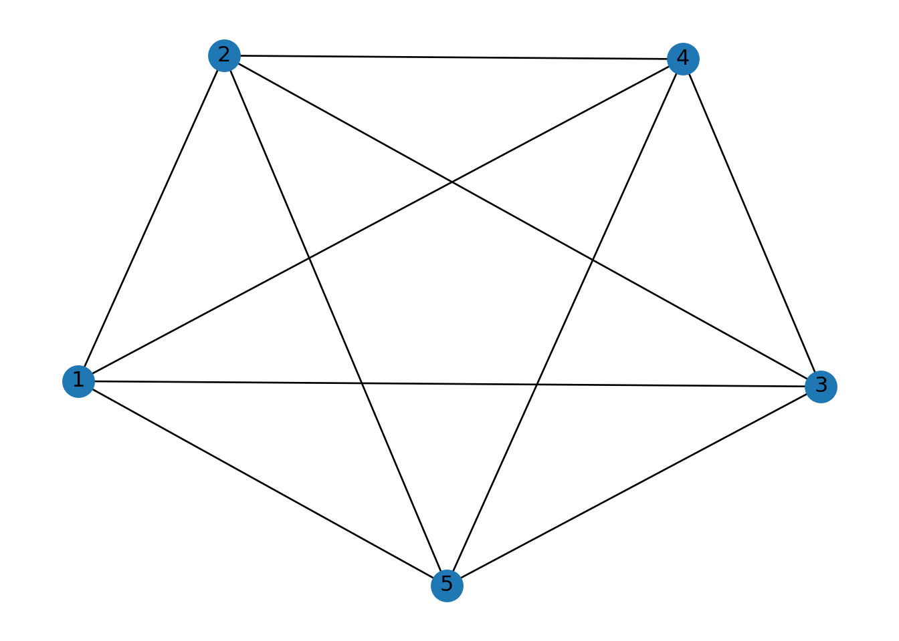
Ejercicio: Verifica la planaridad de complete_graph(4) y complete_graph(5).
2.1.11 Grado y grado medio
## {0: 2, 1: 2, 2: 2, 3: 2, 4: 2, 5: 2}## 2Podemos obtener también un histograma de los grados pero en forma de lista, la frecuencia de cada valor de grado.
## [0, 0, 6]El grado medio lo podemos obtener de la siguiente forma:
deg_values = [d for n,d in G.degree()]
c = np.mean(deg_values)
print("EL grado medio c es igual a ", c)## EL grado medio c es igual a 2.0Teóricamente, el grado medio cumple que \(c=\frac{2m}{n}\), donde \(m\) es el número de aristas y \(n\) el número de vértices.
n = G.number_of_nodes()
m = G.number_of_edges()
v = 2*m/n
print('Se cumple la relación c=2m/n', c == v)## Se cumple la relación c=2m/n TrueEjercicio: Crea una complete_graph(8), calcula el grado medio y comparalo con la fórmula teórica.
2.1.12 Densidad
Para una red no dirigida, tenemos lo siguiente:
## 0.2Para el caso de una red dirigida,
## 0.25Ejemplo: Compara la desidad de las gráficas path_graph(20) y complete_graph(20). ¿Cuál es sparse y cuál densa?
2.1.13 Sparsidad y crecimiento
## n = 20 densidad = 0.1
## n = 50 densidad = 0.04
## n = 100 densidad = 0.022.1.14 Redes multicapa
Podemos definir las aristas con el atributo de capas como sigue:
G = nx.Graph()
# Podemos definir las aristas con el atributo de capas
edges_to_add = [
(1, 2, {'layer': 'physical'}),
(1, 3, {'layer': 'physical'}),
(2, 4, {'layer': 'logical'}),
(3, 4, {'layer': 'logical'})
]
G.add_edges_from(edges_to_add)
print(G.edges(data=True))## [(1, 2, {'layer': 'physical'}), (1, 3, {'layer': 'physical'}), (2, 4, {'layer': 'logical'}), (3, 4, {'layer': 'logical'})]Una forma de dibujarla es como sigue:
G = nx.Graph()
G.add_edges_from([(1, 2, {'layer': 'physical'}), (1, 3, {'layer': 'physical'}), (2, 4, {'layer': 'logical'}), (3, 4, {'layer': 'logical'})])
pos = nx.spring_layout(G)
# Separamos la lista de vértices según la capa
physical_edges = [(u, v) for u, v, d in G.edges(data=True) if d.get('layer') == 'physical']
logical_edges = [(u, v) for u, v, d in G.edges(data=True) if d.get('layer') == 'logical']
# Dibujamos vértices y aristas de diferentes capas con diferentes colores
nx.draw_networkx_nodes(G, pos, node_color='skyblue')## <matplotlib.collections.PathCollection object at 0x0000016FAF2065D0>## <matplotlib.collections.LineCollection object at 0x0000016FAF204690>## <matplotlib.collections.LineCollection object at 0x0000016FAF205BD0>## {1: Text(0.9978751634410112, 0.15866540533175386, '1'), 2: Text(-0.15838668277029103, 1.0, '2'), 3: Text(0.15986226149616256, -0.9993808680878055, '3'), 4: Text(-0.9993507421668825, -0.15928453724394853, '4')}## Text(0.5, 1.0, 'Redes Multicapa')## (np.float64(-1.1629613747551153), np.float64(1.1613382381566568), np.float64(-1.209315859237025), np.float64(1.2099349911492197))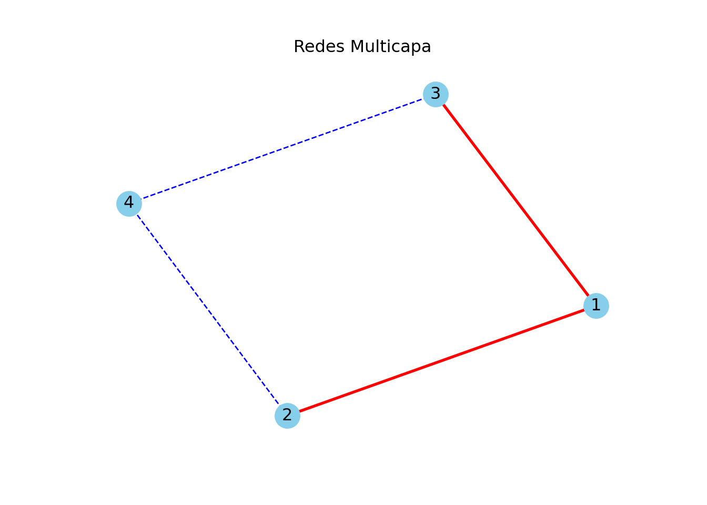
G = nx.Graph()
G.add_edge("Ana","Luis", layer="amistad")
G.add_edge("Ana","Luis", layer="trabajo")
G.edges(data=True)## EdgeDataView([('Ana', 'Luis', {'layer': 'trabajo'})])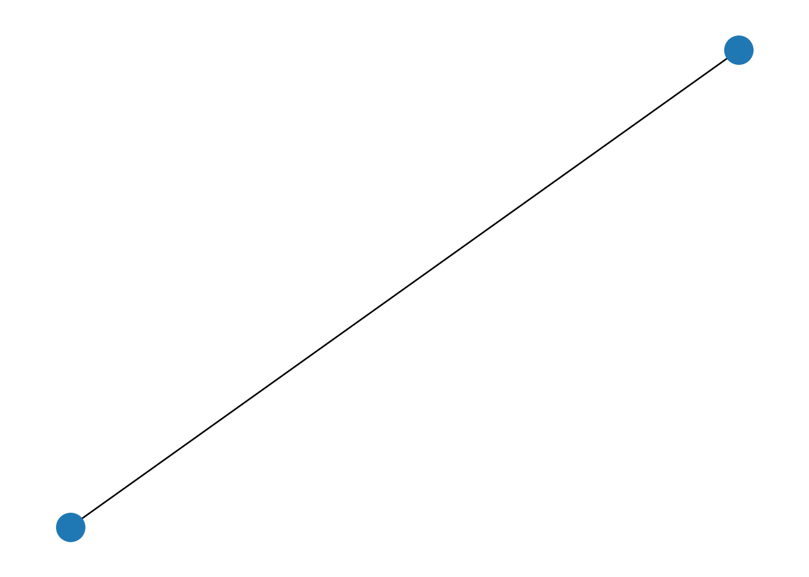
Ejercicio: ¿Cómo cambiaría el grado si consideramos cada capa por separado?
2.1.15 Caminos y trayectorias
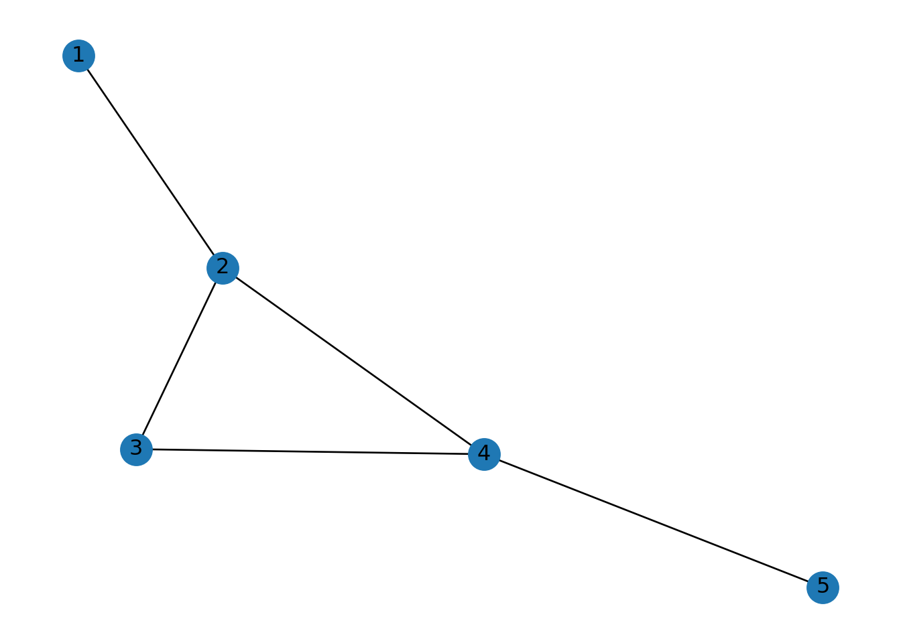
Podemos listas todos los posibles caminos simples(sin vértices repetidos):
## [[1, 2, 3, 4, 5], [1, 2, 4, 5]]Se puede demostrar que que un camino simple se puede encontrar en tiempo \(O(V+E)\) pero el número de trayectorias simples puede ser muy grande, por ejemplo para gráficas completas de orden \(n\) es de tiempo \(O(n!)\).
Uno puede especificar trayectorias de longitud \(\leq r\) (cutoff) como entre dos nodos source y target:
G = nx.complete_graph(4)
paths = nx.all_simple_paths(G, source=0, target=3, cutoff=2)
print(list(paths))## [[0, 1, 3], [0, 2, 3], [0, 3]]Y podemos obtenerlas también como la lista de aristas:
paths = nx.all_simple_paths(G, source=0, target=3)
for path in map(nx.utils.pairwise, paths):
print(list(path))## [(0, 1), (1, 2), (2, 3)]
## [(0, 1), (1, 3)]
## [(0, 2), (2, 1), (1, 3)]
## [(0, 2), (2, 3)]
## [(0, 3)]Podríamos también fijar solo uno de los nodos y el otro variarlo:
## [0, 1, 2]
## [0, 1, 2, 3]
## [0, 1, 3]
## [0, 1, 3, 2]
## [0, 2]
## [0, 2, 1, 3]
## [0, 2, 3]
## [0, 3]
## [0, 3, 1, 2]
## [0, 3, 2]La trayectoria que va de un vértice a si mismo de tamaño 0:
## [[0]]Siempre se incluye en las trayectorias la trayectoria de 0 a 0.
## [[0], [0, 1], [0, 1, 2]]Podemos contar las trayectorias de una raíz a sus hojas en una gráfica dirigida acíclica.
G = nx.DiGraph([(0, 1), (1, 2), (0, 3), (3, 2)])
roots = (v for v, d in G.in_degree() if d == 0)
leaves = (v for v, d in G.out_degree() if d == 0)
all_paths = []
for root in roots:
for leaf in leaves:
paths = nx.all_simple_paths(G, root, leaf)
all_paths.extend(paths)
all_paths## [[0, 1, 2], [0, 3, 2]]Iterar sobre cada ruta desde los nodos raíz a los nodos hoja en un gráfico acíclico dirigido pasando todas las hojas juntas para evitar cálculos innecesarios:
G = nx.DiGraph([(0, 1), (2, 1), (1, 3), (1, 4)])
roots = (v for v, d in G.in_degree() if d == 0)
leaves = [v for v, d in G.out_degree() if d == 0]
all_paths = []
for root in roots:
paths = nx.all_simple_paths(G, root, leaves)
all_paths.extend(paths)
all_paths## [[0, 1, 3], [0, 1, 4], [2, 1, 3], [2, 1, 4]]En las multigráficas, es decir si tenemos aristas paralelas, nos va a regresar las trayectorias múltiple veces:
## [[0, 1, 2], [0, 1, 2]]Como decíamos antes, el tiempo en el que encuentra caminos simples puede ser muy grande, entonces es recomendado preguntarse primero si existen caminos entre dos nodos.
## TrueG2 = nx.Graph()
G2.add_edges_from([(1, 2), (2, 3), (4, 5)])
# nodo 1 y nodo 3
path_exists_1_to_3 = nx.has_path(G2, 1, 3)
print(f"Existe una trayectoria de 1 a 3: {path_exists_1_to_3}")## Existe una trayectoria de 1 a 3: True# Nodo 1 y nodo 4
path_exists_1_to_4 = nx.has_path(G2, 1, 4)
print(f"Existe una trayectoria de 1 a 4: {path_exists_1_to_4}")## Existe una trayectoria de 1 a 4: FalseEjercicio: Construye una red que no tenga un camino entre dos nodos dados. Y usa la función has_path() para verificarlo.
2.1.16 Trayectorias más cortas
G1 = nx.Graph()
G1.add_edges_from([
(1,2),
(2,3),
(3,4),
(2,4),
(4,5)
])
nx.shortest_path(G1, source=1, target=4)## [1, 2, 4]G1 = nx.Graph()
G1.add_edges_from([
(1,2),
(2,3),
(3,4),
(2,4),
(4,5)
])
nx.shortest_path_length(G1, source=1, target=4)## 2Para el caso de gráficas con peso:
WG = nx.Graph()
WG.add_weighted_edges_from([
(1,2,1),
(2,3,2),
(1,3,5),
(3,4,1)
])
nx.shortest_path(WG, source=1, target=4, weight="weight")## [1, 2, 3, 4]Como vemos, networkx tiene implementado el calcular la trayectoria más corta tanto para redes dirigidas, no dirigidas, pesadas y sin peso solo indicandolo en los argumentos de la función.
# Grafica no dirigida con pesos
G = nx.Graph()
G.add_edge("A", "B", weight=4)
G.add_edge("A", "C", weight=2)
G.add_edge("B", "C", weight=5)
G.add_edge("B", "D", weight=10)
G.add_edge("C", "E", weight=3)
G.add_edge("E", "D", weight=4)
G.add_edge("D", "F", weight=11)
# Calcular la trayectoria más corta de A a F considerando pesos
weighted_path = nx.shortest_path(G, source="A", target="F", weight="weight")
print(weighted_path)## ['A', 'C', 'E', 'D', 'F']# Calcular la trayectoria más corta de A a F ignorando pesos
unweighted_path = nx.shortest_path(G, source="A", target="F")
print(unweighted_path)## ['A', 'B', 'D', 'F']Ejercicio: Crea una red dirigida con pesos con 7 vértices. Calcula la trayectoria más corta entre dos nodos especificos y modifica los pesos para que cambie el camino más corto.
| Algoritmo | ¿Soporta pesos? | Tipo de consulta | Complejidad temporal | Recomendado para |
|---|---|---|---|---|
| Búsqueda en Anchura (BFS) | Solo grafos no ponderados | Fuente única, par único | \(O(V + E)\) | Opción más rápida para grafos no ponderados; camino más corto en número de saltos |
| Algoritmo de Dijkstra | Sí | Fuente única, par único | \(O((V + E)\log V)\) | Opción de propósito general para grafos con pesos no negativos |
| Bellman–Ford | Sí | Fuente única, par único | \(O(VE)\) | Grafos con pesos negativos |
| Floyd–Warshall | Sí | Todos los pares | \(O(V^3)\) | Grafos densos o cuando se necesitan caminos más cortos entre todos los pares |
| Johnson | Sí | Todos los pares | \(O(V(V + E)\log V)\) | Caminos más cortos entre todos los pares con pesos negativos |
Manual de NetworkX: https://networkx.org/documentation/stable/reference/algorithms/shortest_paths.html
Si no se especifica, por lo general se usa Breadth–First Search para redes no pesadas y Dijkstra’s Algorithm para redes con pesos.
Otra función que podemos usar es la de el promedio de las trayectorias más cortas.
\[ a = \sum_{s,t\in V, s\neq t} \frac{d(s,t)}{n}\]
## 2.0Y para redes no conexas:
G = nx.Graph([(1, 2), (3, 4)])
for C in (G.subgraph(c).copy() for c in nx.connected_components(G)):
print(nx.average_shortest_path_length(C))## 1.0
## 1.02.1.16.1 Caminos
La función de networkx que nos regresa los caminos (que pueden pasar por el mismo vértice, arista o regresar sobre alguna arista), se le debe especificar la longitud de los caminos.
## {0: {0: 1, 1: 0, 2: 1}, 1: {0: 0, 1: 2, 2: 0}, 2: {0: 1, 1: 0, 2: 1}}## 6Podemos especificar también el nodo source y el target:
## {0: 0, 1: 1, 2: 0}## 1## 12.1.16.2 Predecesor, antecesor y descendientes
ancestors(G, source): Devuelve todos los nodos que pueden llegar asourcesiguiendo la dirección de las aristas.
Son los nodos desde los cuales se puede alcanzar source.
## [0, 1]Se puede incluir manualmente el nodo source.
## [0, 1, 2]descendants(G, source): Devuelve todos los nodos alcanzables desdesource.
Son los nodos a los que podemos llegar desde source.
## [3, 4]Se puede incluir manualmente el nodo source.
## [2, 3, 4]predecessor(G, source, ...): Podemos obtener la lista de predecesores para la trayectoria del vérticesourcea todos los vértices de la gráfica. Lo que nos da es un diccionario. Se construye el árbol de exploración desdesource.
## [0, 1, 2, 3]## {0: [], 1: [0], 2: [1], 3: [2]}## {0: [], 1: [0], 2: [1]}2.1.17 Componentes conexas
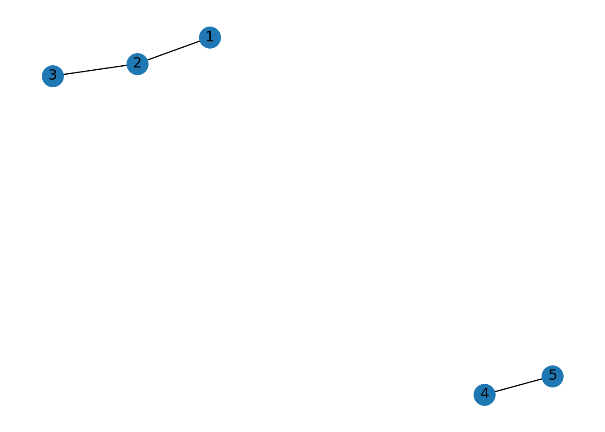
## [{1, 2, 3}, {4, 5}]number_connected_components: Cuenta cuántas componentes conexas tiene un grafo no dirigido.
## 2is_connected: Verifica si un grafo no dirigido es completamente conexo. Es decir, si todos los nodos pertenecen a una sola componente.
## FalseSi conectamos los dos grupos:
## Truenumber_weakly_connected_components: Se usa para grafos dirigidos. Cuenta las componentes débilmente conexas.
DG = nx.DiGraph()
DG.add_edges_from([
(1,2),
(2,3),
(4,5)
])
nx.draw(DG, with_labels=True)
plt.show()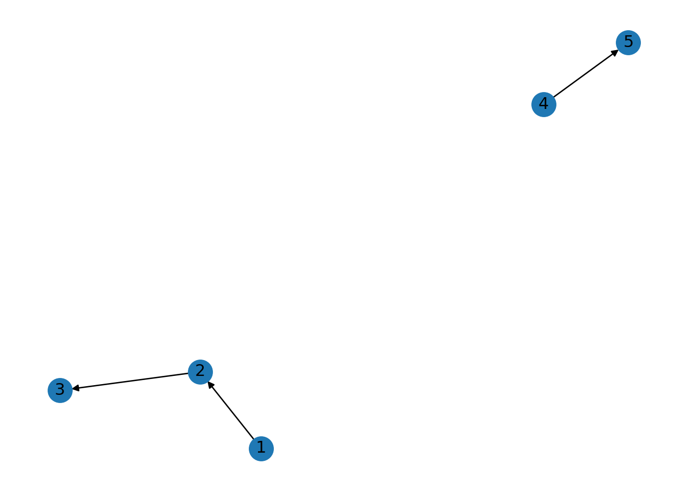
## 2number_strongly_connected_components: Cuenta las componentes fuertemente conexas en un grafo dirigido. Un conjunto de nodos es fuertemente conexo si cada nodo puede alcanzar a todos los demás siguiendo la dirección de las aristas.
DG = nx.DiGraph()
DG.add_edges_from([
(1,2),
(2,3),
(3,1),
(4,5)
])
nx.number_strongly_connected_components(DG)## 3Y también podemos preguntar por cuales son estas componentes. Para el caso de redes dirigidas, tenemos una forma de preguntar por las débilmente conectadas y las fuertemente conectadas.
## [{1, 2, 3, 4, 5}]## [{4}, {1, 2, 3}, {5}]Y para las In y Out componentes también:
descendants(G, source): nos regresa todos los vértices que son alcanzables desde algún vérticesource.ancestors(G, source): nos regresa todos los vértices que tienen una trayectoria al vérticesource.
## {2, 3, 4}## {2, 3}2.1.18 Trayectorias independientes
edge_disjoint_paths(): Devuelve caminos disjuntos por aristas entre dos nodos: los caminos no comparten aristas, pero sí pueden compartir nodos.
G1 = nx.Graph()
G1.add_edges_from([
(1,2),
(2,3),
(3,4),
(2,4),
(4,5)
])
list(nx.edge_disjoint_paths(G1, 1, 4))## [[1, 2, 4]]Otro ejemplo:
G2 = nx.Graph()
G2.add_edges_from([
("A","X"),
("X","B"),
("A","Y"),
("Y","X"),
("X","Z"),
("Z","B")
])
list(nx.edge_disjoint_paths(G2, "A", "B"))## [['A', 'X', 'Z', 'B'], ['A', 'Y', 'X', 'B']]node_disjoint_paths(): Encuentra caminos disjuntos por nodos entre dos nodos. Dos caminos son node-disjoint si no comparten nodos internos. Esto mide cuántas rutas independientes existen entre dos nodos.
G1 = nx.Graph()
G1.add_edges_from([
(1,2),
(2,3),
(3,4),
(2,4),
(4,5)
])
list(nx.node_disjoint_paths(G1, 1, 4))## [[1, 2, 4]]edge_connectivity(): Mide la conectividad por aristas de un grafo. Es el mínimo número de aristas que hay que eliminar para desconectar el grafo.
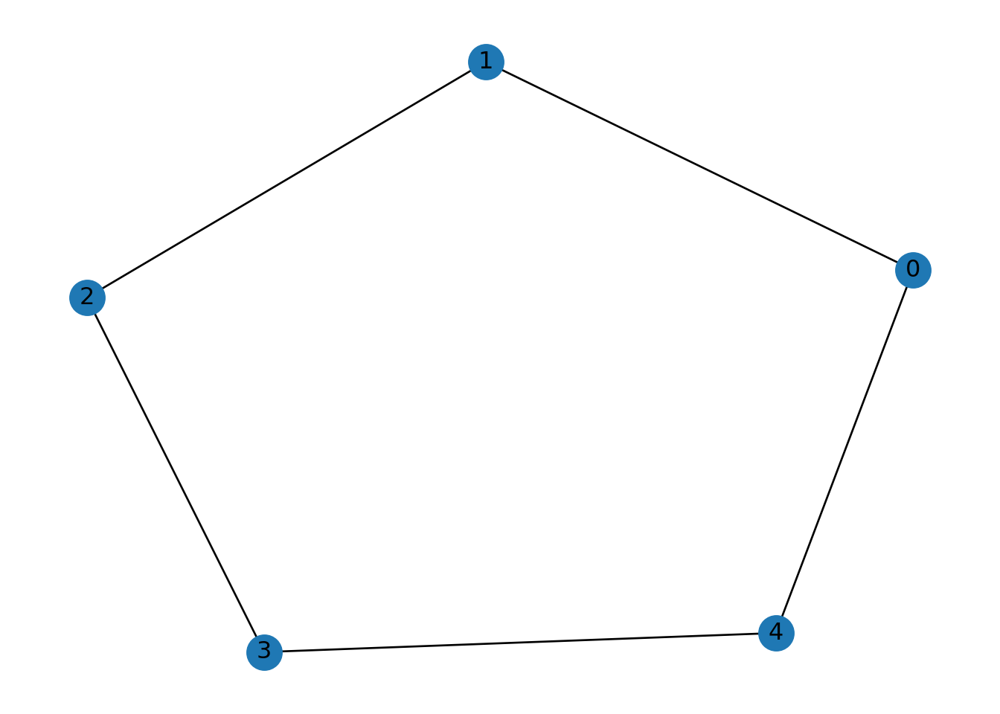
## 22.1.19 Conjuntos de corte
minimum_edge_cut: Conjunto de corte por aristas mínimo.
G1 = nx.Graph()
G1.add_edges_from([
(1,2),
(2,3),
(3,4),
(2,4),
(4,5)
])
nx.minimum_edge_cut(G1, 1, 4)## {(1, 2)}minimum_node_cut:Conjunto de corte por vértices mínimo.
G1 = nx.Graph()
G1.add_edges_from([
(1,2),
(2,3),
(3,4),
(2,4),
(4,5)
])
nx.minimum_node_cut(G1, 1, 4)## {2}maximum_flow(): Calcula el flujo máximo entre dos nodos en un grafo dirigido con capacidades.
G = nx.DiGraph()
G.add_edge("s","a", capacity=3)
G.add_edge("s","b", capacity=2)
G.add_edge("a","b", capacity=1)
G.add_edge("a","t", capacity=2)
G.add_edge("b","t", capacity=3)
flow_value, flow_dict = nx.maximum_flow(G, "s", "t")
flow_value## 5## {'s': {'a': 3, 'b': 2}, 'a': {'b': 1, 't': 2}, 'b': {'t': 3}, 't': {}}2.1.20 Teorema max-flow / min-cut
El teorema dice flujo máximo = capacidad de corte. Veamos un ejemplo:
G = nx.DiGraph()
G.add_edge("s","a", capacity=3)
G.add_edge("s","b", capacity=2)
G.add_edge("a","b", capacity=1)
G.add_edge("a","t", capacity=2)
G.add_edge("b","t", capacity=3)
flow_value, flow_dict = nx.maximum_flow(G, "s", "t")
cut_value, partition = nx.minimum_cut(G, "s", "t")## True2.1.21 Teorema de Menger
- Versión por aristas: máximo número de caminos edge-disjoint = tamaño mínimo de edge-cut.
G = nx.Graph()
G.add_edges_from([
("s","a"),
("a","t"),
("s","b"),
("b","t"),
("s","c"),
("c","t")
])
paths = list(nx.edge_disjoint_paths(G,"s","t"))
len(paths)## 3## {('c', 't'), ('a', 't'), ('b', 't')}## True- Versión por vértices: máximo número de caminos node-disjoint == tamaño del mínimo node-cut.
## TrueEjemplo completo:
import networkx as nx
# 1) Grafo base: 3 "caminos" paralelos entre s y t
G = nx.Graph()
G.add_edges_from([
("s","a"), ("a","t"),
("s","b"), ("b","t"),
("s","c"), ("c","t")
])
s, t = "s", "t"
# --- Menger (por aristas) ---
ed_paths = list(nx.edge_disjoint_paths(G, s, t))
min_e_cut = nx.minimum_edge_cut(G, s, t)
print("Edge-disjoint paths (lista):", ed_paths)## Edge-disjoint paths (lista): [['s', 'a', 't'], ['s', 'b', 't'], ['s', 'c', 't']]## Número de edge-disjoint paths: 3## Minimum edge cut: {('c', 't'), ('a', 't'), ('b', 't')}## Tamaño minimum edge cut: 3# 2) Max-flow / min-cut (con capacidades unitarias)
DG = nx.DiGraph()
DG.add_edges_from((u, v, {"capacity": 1}) for u, v in G.edges())
DG.add_edges_from((v, u, {"capacity": 1}) for u, v in G.edges()) # porque G es no dirigido
flow_value, flow_dict = nx.maximum_flow(DG, s, t)
cut_value, (S, T) = nx.minimum_cut(DG, s, t)
print("\nMax flow value:", flow_value)##
## Max flow value: 3## Min cut value: 3## Partición del min-cut: S = {'s', 'c', 'a', 'b'} | T = {'t'}# --- Menger (por nodos) ---
nd_paths = list(nx.node_disjoint_paths(G, s, t))
min_n_cut = nx.minimum_node_cut(G, s, t)
print("\nNode-disjoint paths (lista):", nd_paths)##
## Node-disjoint paths (lista): [['s', 'a', 't'], ['s', 'b', 't'], ['s', 'c', 't']]## Número de node-disjoint paths: 3## Minimum node cut: {'a', 'c', 'b'}## Tamaño minimum node cut: 3Ejercicio: Considere el siguiente grafo que representa una red de transporte entre dos ciudades \(s\) y \(t\).
\[ s\rightarrow a \rightarrow c \rightarrow t \\ s\rightarrow b \rightarrow c \rightarrow t \\ s\rightarrow d \rightarrow c \rightarrow t\]
- Dibuje el grafo y determine todos los caminos de \(s\) a \(t\).
- Determine cuántos trayectorias edge-disjoint existen entre \(s\) y \(t\).
- Determine el minimum edge cut que separa \(s\) y \(t\).
- Suponga que cada arista tiene capacidad 1. ¿Cuál es el maximum flow entre \(s\) y \(t\)?
- Explique por qué este grafo tiene un cuello de botella.
2.1.22 Flujo máximo y corte mínimo en redes con pesos
Consideremos la siguiente red:
G = nx.DiGraph()
G.add_edge("s","a", capacity=3)
G.add_edge("s","b", capacity=2)
G.add_edge("a","b", capacity=1)
G.add_edge("a","t", capacity=2)
G.add_edge("b","t", capacity=3)
pos = nx.spring_layout(G, seed=42)
nx.draw(G, pos, with_labels=True, node_size=2000, node_color="lightblue")
labels = nx.get_edge_attributes(G, "capacity")
nx.draw_networkx_edge_labels(G, pos, edge_labels=labels)## {('s', 'a'): Text(0.1655166880701242, -0.23607636216976674, '3'), ('s', 'b'): Text(-0.3226585354136076, -0.33387624504536834, '2'), ('a', 'b'): Text(-0.0180688086388876, -0.4300449375108723, '1'), ('a', 't'): Text(0.32265961604055593, 0.33388152652512626, '2'), ('b', 't'): Text(-0.16551753061102586, 0.2360760202066411, '3')}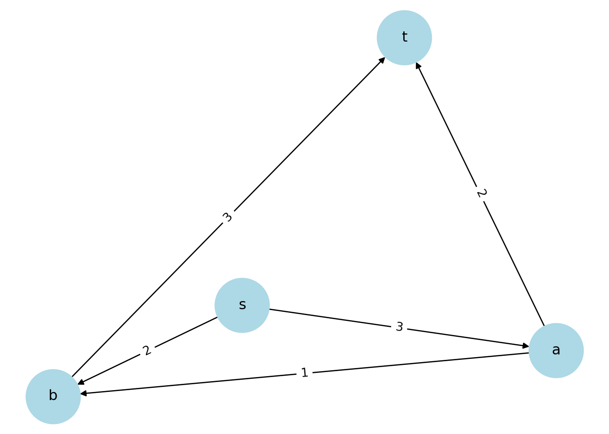
Calculemos el flujo máximo.## 5Y la distribución del flujo sería entonces:
## {'s': {'a': 3, 'b': 2}, 'a': {'b': 1, 't': 2}, 'b': {'t': 3}, 't': {}}Ahora calculamos el minimum cut:
## 5Y la partición nos quedaría como:
## ({'s', 'a', 'b'}, {'t'})La partición es las componentes que quedan separadas al realizar el corte mínimo.
El corte mínimo representa el cuello de botella de la red.
Aunque haya muchas rutas, la capacidad total hacia \(t\) es \(2+3=5\), por lo que no puede pasar más flujo.
2.1.23 El Laplaciano
Dada una matriz, recordemos que el Laplaciano está dado como \(L=D-A\), donde \(D\) es la matriz diagonal con los grados de los vértices y \(A\) es la matriz de adyacencia. Si en networkx no proporcionamos la lista de vértices, el orden por default que usa para crear el Laplaciano, será el orden que nos regrese la función G.nodes(). Las matrices que devuelve networkx son matrices del tipo sparse, es decir, no almacenan los ceros para optimizar recursos. Si queremos ver una matriz con todas sus entradas, debemos convertirla a un arreglo de numpy o a una matriz densa con todense().
Consideremos la siguiente gráfica \(1\rightarrow 2 \rightarrow 3\).
## array([[0, 1, 0],
## [1, 0, 1],
## [0, 1, 0]])Y el Laplaciano estaría dado por:
## array([[ 1, -1, 0],
## [-1, 2, -1],
## [ 0, -1, 1]])En networkx también podemos calcular el Laplaciano normalizado \(L_{norm}=D^{-172}LD^{1/2}\):
## array([[ 1. , -0.70710678, 0. ],
## [-0.70710678, 1. , -0.70710678],
## [ 0. , -0.70710678, 1. ]])Vimos también, que los valores propios del Laplaciano nos ayudan en algunos problemas en especifico y que revelaban propiedades estructurales de la gráfica.
## array([ 3.00000000e+00, 1.00000000e+00, -3.36770206e-17])Y como ya vimos, siempre hay al menos un valor propio cero. En este ejemplo, hay exactamente uno que es cero, es decir vamos a tener solo una componente conexa.
## 1Veamos un ejemplo con dos componentes conexas.
G = nx.Graph()
G.add_edges_from([
(1,2),
(2,3),
(4,5)
])
L = nx.laplacian_matrix(G).todense()
eigvals = np.linalg.eigvals(L)
eigvals## array([ 3.00000000e+00, 1.00000000e+00, -3.36770206e-17, 2.00000000e+00,
## 0.00000000e+00])## 2Un ejemplo más:
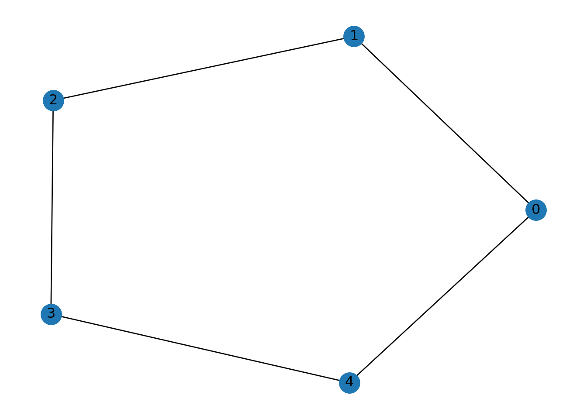
## array([ 3.61803399e+00, 1.38196601e+00, -2.38411352e-16, 3.61803399e+00,
## 1.38196601e+00])Si es posible definir el Laplaciano para redes dirigidas, pero muchas propiedades cambian.
edges = [
(1, 2),
(2, 1),
(2, 4),
(4, 3),
(3, 4),
]
DiG = nx.DiGraph(edges)
print(nx.laplacian_matrix(DiG).toarray())## [[ 1 -1 0 0]
## [-1 2 -1 0]
## [ 0 0 1 -1]
## [ 0 0 -1 1]]Y como mencionamos, le podemos pasar el orden de los nodos.
## [[ 1 -1 0 0]
## [-1 2 0 -1]
## [ 0 0 1 -1]
## [ 0 0 -1 1]]Todos estos cálculos, usan el out-degree, si queremos usar el in-degree, se puede obtener la matriz reversa G.reverse(copy=False) y calcular la transpuesta del Laplaciano.
## [[ 1 -1 0 0]
## [-1 1 -1 0]
## [ 0 0 2 -1]
## [ 0 0 -1 1]]Netoworkx tiene implementado obtener los valores propios con la función laplacian_spectrum.
G = nx.Graph() # Gráfica con 5 vértices y 3 componentes conexas
G.add_nodes_from(range(5))
G.add_edges_from([(0, 2), (3, 4)])
nx.laplacian_spectrum(G)## array([0., 0., 0., 2., 2.])Ejercicios:
Considere el grafo \(1-2-3-4-1\). Calcula el grafo en Networkx, la matriz de adyacencia, el Laplaciano y los eigenvalores.
Realiza una gráfica con 4 componentes conexas y 10 vértices. Calcula el Laplaciano, y verifica que en efecto tenga 4 componentes conexas usando las propiedades del Laplaciano. Intercambia tu ejemplo con tus compañeros para que lo repliquen.
2.1.23.1 Caminatas Aleatorias
Veamos el ejemplo de del grafo \(1\rightarrow 2 \rightarrow 3\):
import numpy as np
import networkx as nx
# grafo
G = nx.path_graph(3)
# matriz de adyacencia
A = nx.to_numpy_array(G)
# matriz de grados
deg = A.sum(axis=1)
D = np.diag(deg)
# inversa
D_inv = np.linalg.inv(D)
# matriz del libro
T = A @ D_inv
print("A=")## A=## [[0. 1. 0.]
## [1. 0. 1.]
## [0. 1. 0.]]##
## T = A D^{-1}## [[0. 0.5 0. ]
## [1. 0. 1. ]
## [0. 0.5 0. ]]## p = [[0.]
## [1.]
## [0.]]
## p = [[0.5]
## [0. ]
## [0.5]]
## p = [[0.]
## [1.]
## [0.]]
## p = [[0.5]
## [0. ]
## [0.5]]
## p = [[0.]
## [1.]
## [0.]]Construyamos un ejemplo más interesante.
# Dos cliques conectadas por un puente
G1 = nx.complete_graph(range(0,6))
G2 = nx.complete_graph(range(6,12))
G = nx.compose(G1, G2)
G.add_edge(5, 6) # cuello de botella
# Matrices
A = nx.to_numpy_array(G)
deg = A.sum(axis=1)
D = np.diag(deg)
L = D - A
Lnorm = nx.normalized_laplacian_matrix(G).toarray()Vamos a construir \(P\) y simular una caminata aleatoria. Vamos a hacer un cambio con respecto a la notación del libro por simplicidad. Vamos a considerar vectores fila, entonces la matriz de cambio será \(D^{-1}A\).
P = np.linalg.inv(D) @ A
def random_walk(P, start, steps, rng=None):
rng = np.random.default_rng(rng) #fijamos la semilla, si es por ej 0 se fija si no cambia en cada paso
x = start # definimos el nodo donde comienza la caminata
path = [x] # creamos una lista con el nodo donde comienza y donde se agregaran los siguientes nodos de la caminata
for _ in range(steps): # el _ significa que solo quiero repetir el proceso sin importar el valor del contador y lo haremos steps veces
x = rng.choice(len(P), p=P[x]) # elije un numero j del vector entre 0 y n-1 con las probabilidades del vector fila
path.append(x) # agrega el nodo
return path
path = random_walk(P, start=0, steps=20, rng=0)
path## [0, 4, 1, 0, 1, 5, 6, 9, 10, 8, 11, 10, 6, 11, 6, 10, 6, 11, 8, 7, 9]Así, la probabilidad de ir al vértice \(i\) será la siguiente(usando la fórmula del libro):
## (array([0.08064516, 0.08064516, 0.08064516, 0.08064516, 0.08064516,
## 0.09677419]), array([0.09677419, 0.08064516, 0.08064516, 0.08064516, 0.08064516,
## 0.08064516]))Comprobemos que en el límite coincide:
p = np.zeros(len(G))
p[0] = 1.0 # inicio en nodo 0
for _ in range(50):
p = p @ P
p.round(4), pi.round(4)## (array([0.0872, 0.0872, 0.0872, 0.0872, 0.0872, 0.1026, 0.0909, 0.0741,
## 0.0741, 0.0741, 0.0741, 0.0741]), array([0.0806, 0.0806, 0.0806, 0.0806, 0.0806, 0.0968, 0.0968, 0.0806,
## 0.0806, 0.0806, 0.0806, 0.0806]))2.1.24 Ejemplos con datos reales
2.1.24.1 Ejercicio 1: Vuelos en EU
Base de datos tomada de https://github.com/CambridgeUniversityPress/FirstCourseNetworkScience/tree/master
G = nx.read_graphml('D:/Users/hayde/Documents/R_sites/Ciencia_de_Redes/data/openflights_usa.graphml.gz')
print("Nodos:", G.number_of_nodes())## Nodos: 546## Aristas: 2781Los nodos en este grafo son aeropuertos, representados por sus códigos IATA; dos nodos están conectados por una arista si existe un vuelo programado que conecta directamente esos dos aeropuertos. Supondremos que este grafo es no dirigido, ya que un vuelo en una dirección generalmente implica que existe también un vuelo de regreso.
Por lo tanto, este grafo tiene aristas como [('HOM', 'ANC'), ('BGM', 'PHL'), ('BGM', 'IAD'), ...]
donde ANC corresponde a Anchorage, IAD corresponde a Washington Dulles, etc.
Estos nodos también tienen atributos asociados, que contienen información adicional sobre los aeropuertos.
## {'name': 'Indianapolis International Airport', 'latitude': 39.7173, 'longitude': -86.294403, 'IATA': 'IND'}Y también estan guardados como diccionarios:
## 'Indianapolis International Airport'Responde las siguientes preguntas:
¿Hay un vuelo directo entre Indianápolis y Fairbanks, Alaska (FAI)? Un vuelo directo es aquel sin escalas.
Si quisiera volar desde Indianápolis a Fairbanks, Alaska, ¿cuál sería el itinerario con el menor número de vuelos?
¿Es posible viajar desde cualquier aeropuerto de EE. UU. a cualquier otro, posiblemente con vuelos de conexión? En otras palabras, ¿existe una ruta en la red entre cada par de aeropuertos posibles?
2.1.24.3 Ejercicio 3: Comparación de redes de personajes en dos películas
En este ejercicio analizaremos redes de interacción entre personajes utilizando datos del proyecto Moviegalaxies:
En estas redes:
- cada nodo representa un personaje,
- cada arista representa una interacción o co-aparición entre personajes.
El objetivo es aplicar los conceptos vistos en clase para estudiar la estructura y conectividad de estas redes y comparar la organización social de dos historias diferentes.
Instrucciones generales
- Elige dos películas diferentes del sitio Moviegalaxies.
- Descarga los archivos de red en formato JSON. (Debes investigar como leer estos archivos en
Networkx) - Carga ambas redes en
Pythonusandonetworkx. - Responde cada inciso con apoyo de código, cálculos e interpretación.
Parte 1. Propiedades básicas de las redes
Para cada una de las dos redes, calcula:
- número de nodos \(n\),
- número de aristas \(m\),
- grado promedio,
- diámetro de la red.
Responde lo siguiente:
¿Cuál de las dos redes tiene más personajes?
¿Cuál tiene mayor grado promedio?
¿Cuál tiene mayor diámetro?
¿Qué sugiere el diámetro sobre la distancia social entre personajes en cada historia?
Parte 2. Personajes centrales
Para cada red:
- calcula el grado de todos los nodos,
- identifica el personaje con mayor grado.
Responde lo siguiente:
¿Quién es el personaje más conectado en cada película?
¿Cuántos personajes diferentes interactúan con él o ella?
¿Coincide este personaje con quien considerarías el protagonista de la historia?
Parte 3. Caminos disjuntos y corte mínimo
En cada red elige dos personajes importantes.
Calcula:
- el número de caminos disjuntos por aristas entre ellos,
- el tamaño del conjunto de corte mínimo por aristas entre esos nodos.
Responde lo siguiente:
¿Coinciden ambos valores?
¿Qué significa esto en términos de la conectividad entre esos personajes?
¿Cuántas interacciones tendrían que desaparecer para separarlos en la red?
Parte 4. Eliminación de un personaje importante
Para cada red:
- elimina el nodo de mayor grado,
- calcula nuevamente:
- número de componentes conexas,
- diámetro de la componente conexa más grande.
Responde lo siguiente:
¿La red se fragmenta al eliminar ese personaje?
¿En cuál de las dos redes el efecto es mayor?
¿Qué indica esto sobre la robustez estructural de la red?
Parte 5. Comparación final
Escribe un breve análisis comparando ambas redes.
Tu discusión debe incluir:
- cuál red parece más conectada,
- cuál parece más vulnerable a la eliminación de nodos,
- cómo se relacionan estas observaciones con los conceptos de grado, diámetro y conectividad.
2.2 Medidas y métricas.
2.2.1 Centralidad
La centralidad mide la importancia de un nodo en un grafo. Cuantifica roles como puentes o hubs mediante fórmulas que involucran grados, distancias o eigenvalores. NetworkX proporciona funciones en networkx.algorithms.centrality para grafos dirigidos y no dirigidos, normalizadas cuando aplica.
Usaremos el grafo del club de karate de Zachary (34 nodos, 78 aristas).
import networkx as nx
import matplotlib.pyplot as plt
K = nx.karate_club_graph()
print("Nodos:", K.number_of_nodes())## Nodos: 34## Aristas: 78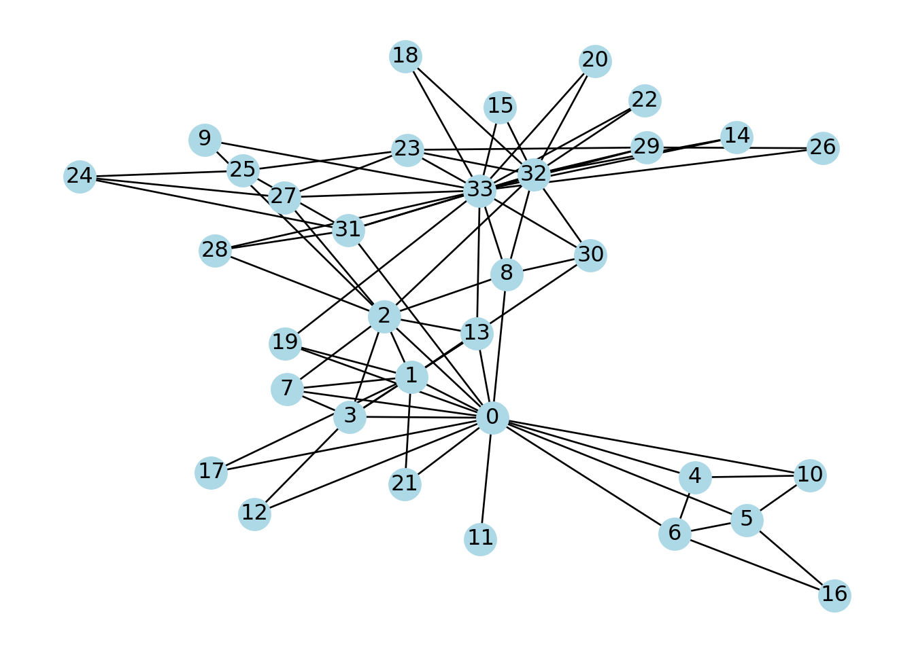
2.2.1.1 Centralidad de Grado
Mide conexiones directas de un nodo \(v\), en Networkx se considera normalizada, se divide el grado entre el máximo posible grado en una red simple, es decir, entre \(n-1\), donde \(n=|V|\):
\[C_D(v) = \frac{\deg(v)}{n-1}.\]
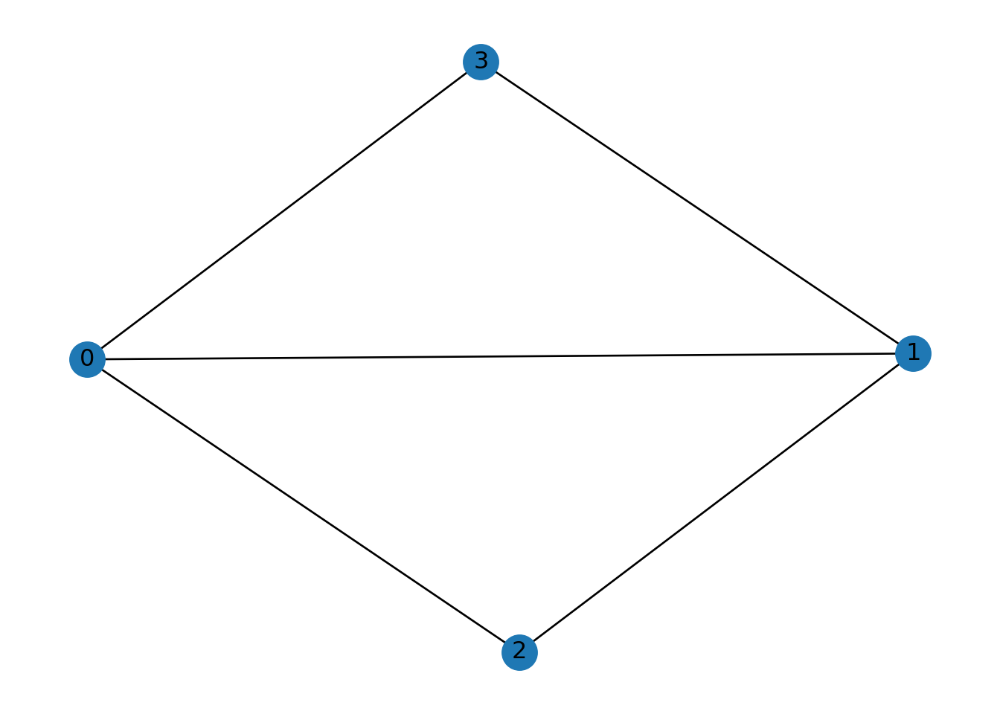
## {0: 1.0, 1: 1.0, 2: 0.6666666666666666, 3: 0.6666666666666666}En nuestro ejemplo de la red de Karate:
## [(0, '0.48'), (1, '0.27'), (2, '0.30'), (3, '0.18'), (4, '0.09'), (5, '0.12'), (6, '0.12'), (7, '0.12'), (8, '0.15'), (9, '0.06'), (10, '0.09'), (11, '0.03'), (12, '0.06'), (13, '0.15'), (14, '0.06'), (15, '0.06'), (16, '0.06'), (17, '0.06'), (18, '0.06'), (19, '0.09'), (20, '0.06'), (21, '0.06'), (22, '0.06'), (23, '0.15'), (24, '0.09'), (25, '0.09'), (26, '0.06'), (27, '0.12'), (28, '0.09'), (29, '0.12'), (30, '0.12'), (31, '0.18'), (32, '0.36'), (33, '0.52')]2.2.1.2 Centralidad de Eigenvector
Basada en eigenvalor principal de la matriz de adyacencia: \(v^T A= \lambda v^T\), \(C_E(v) = v_i / \max(v)\). En networkx se calcula el eigenvector izquierdo. Si se quiere el derecho, se debe usar G.reverse().
El resultado es un vector con unitario con norma Euclideana.
G = nx.path_graph(4)
ec = nx.eigenvector_centrality(G)
sorted((v, f"{c:0.2f}") for v, c in ec.items())## [(0, '0.37'), (1, '0.60'), (2, '0.60'), (3, '0.37')]2.2.1.3 Centralidad Katz
import math
G = nx.path_graph(4)
phi = (1 + math.sqrt(5)) / 2.0 # eigenvalor más grande de la matriz de adyacencia
centrality = nx.katz_centrality(G, 1 / phi - 0.01) # alpha=1/phi-0.01
for n, c in sorted(centrality.items()):
print(f"{n} {c:.2f}")## 0 0.37
## 1 0.60
## 2 0.60
## 3 0.37Por default \(\beta=1.0\) y \(\alpha= 0.1\)
2.2.1.4 PageRank
Fue diseñado para redes dirigidas, pero su implementación en Networkx no verifica esto, convierte más bien la red en uan dirigida.
2.2.1.5 Centralidad de cercania
En networkx, está implementada como
\[C(u) = \frac{n-1}{\sum_{v=1}^{n-1}d(u,v)}\]
## {0: 1.0, 1: 1.0, 2: 0.75, 3: 0.75}2.2.1.6 Centralidad de Entre Aristas (Betweenness)
Suma fracciones de caminos más cortos que pasan por \(v\): \(C_B(v) = \sum_{s \neq t \neq v} \frac{\sigma_{st}(v)}{\sigma_{st}}\).
## {0: 0.0, 1: 1.0, 2: 0.0}## {0: 2.0, 1: 3.0, 2: 2.0}Hay diferentes consideraciones que se pueden hacer en esta función.
normalized=False: NO escala los valores, da los conteos “crudos”endpoints=False: No cuenta los nodos extremos del camino, es decir, solo cuenta nodos intermedios.
Ejercicio: Para la red de Karate, calcula las centralidades y comparalas. Que nodos son los que tienen mayor centralidad en cada caso.
2.2.2 Grupos de nodos
2.2.2.1 Cliques
Una clique es un subconjunto de nodos donde todos están conectados entre sí.
A —— B
\ /
CFunciones principales en NetworkX
| Función | Qué hace |
|---|---|
find_cliques(G) |
Encuentra cliques maximales |
enumerate_all_cliques(G) |
Encuentra todas las cliques |
node_clique_number(G) |
Tamaño de la mayor clique por nodo |
number_of_cliques(G) |
Cuántas cliques contiene cada nodo |
max_weight_clique(G) |
Clique máxima con pesos |
k_clique_communities(G, k) |
Comunidades basadas en cliques |
Ejemplos:
G = nx.Graph()
G.add_edges_from([(1,2), (2,3), (1,3),(3,4)])
pos = nx.spring_layout(G, seed=7)
nx.draw(G, pos, with_labels=True, node_size=900)
plt.show()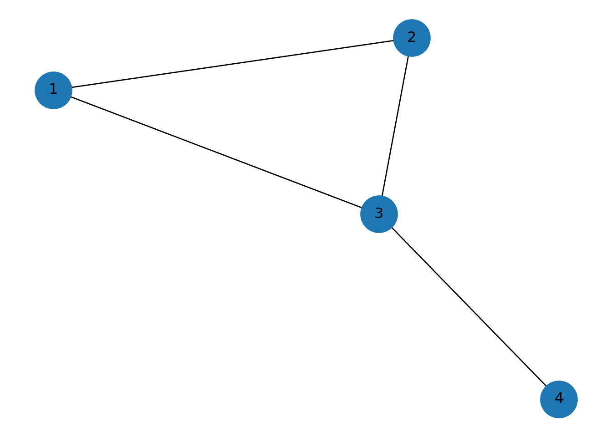
find_cliques(G): Esta función devuelve todas las cliques maximales del grafo.
Recuerda: - Una clique maximal no puede agrandarse. - No tiene que ser la más grande globalmente.
## [[3, 1, 2], [3, 4]]- Tamaño de la clique máxima: Si queremos encontrar el tamaño de la clique más grande:
## (3, [3, 1, 2])number_of_cliques(G): Cuenta cuántas cliques maximales contiene cada nodo.
## {1: 1, 2: 1, 3: 2, 4: 1}Interpretación
- El nodo 3 aparece en dos cliques maximales: [1,2,3] y [3,4]
- Los demás aparecen en una sola
node_clique_number(G): Devuelve, para cada nodo, el tamaño de la mayor clique maximal que lo contiene.
## defaultdict(<class 'int'>, {3: 3, 1: 3, 2: 3, 4: 2})Interpretación:
- Los nodos 1, 2 y 3 están dentro de una clique de tamaño 3
- El nodo 4 solo pertenece a la clique [3,4], de tamaño 2
enumerate_all_cliques(G): Esta función devuelve todas las cliques de un grafo no dirigido.
Incluye: - cliques de tamaño 1 (nodos) - cliques de tamaño 2 (aristas) - cliques de tamaño 3, 4, etc.Todas las cliques (no solo maximales):
## [[1], [2], [3], [4], [1, 2], [1, 3], [2, 3], [3, 4], [1, 2, 3]]Incluye:
nodos individuales
pares
triángulos
Ejercicio 1: Encuentra los Cliques maximales para la siguiente gráfica.
C4 = nx.cycle_graph(4)
pos = nx.circular_layout(C4)
nx.draw(C4, pos, with_labels=True, node_size=900)
plt.show()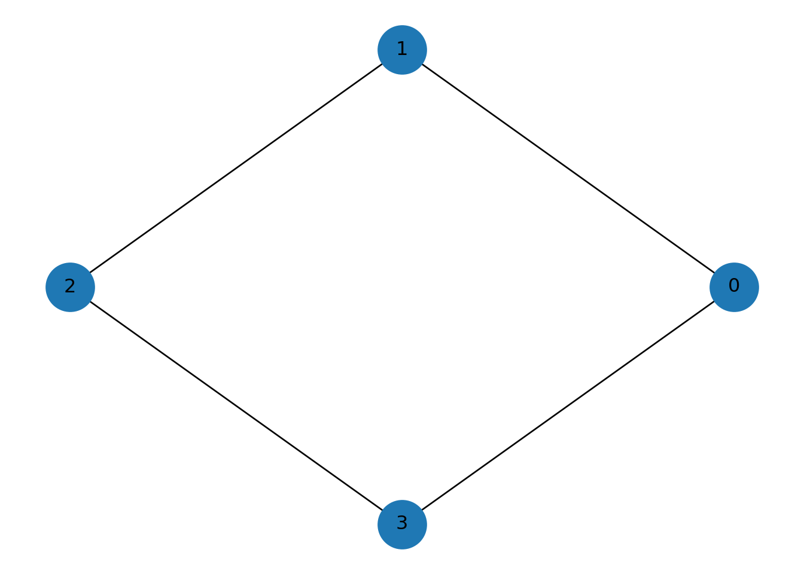
Ejemplo: con una red más conocida: Karate Club. El grafo de Karate Club viene incluido en NetworkX.
K = nx.karate_club_graph()
maximal = list(nx.find_cliques(K))
largest = max(maximal, key=len)
print("Número de cliques maximales:", len(maximal))## Número de cliques maximales: 36## Tamaño de la clique máxima: 5## Una clique máxima: [0, 1, 2, 3, 13]- Visualización de una clique encontrada: Podemos resaltar una clique máxima dentro del grafo.
pos = nx.spring_layout(K, seed=4)
# Convertimos a conjunto largest
largest_set = set(largest)
# Para cada nodo n en largest_set, si n está ahí, entonces se colorea con tab:red, si no con gris,
# Nos genera una lista con los colores ["lightgray", "tab:red", "lightgray", "tab:red", ...] en el mismo orden que aparecen los nodos.
node_colors = ["tab:red" if n in largest_set else "lightgray" for n in K.nodes()]
nx.draw(K, pos, with_labels=True, node_color=node_colors, node_size=500, font_size=8)
plt.show()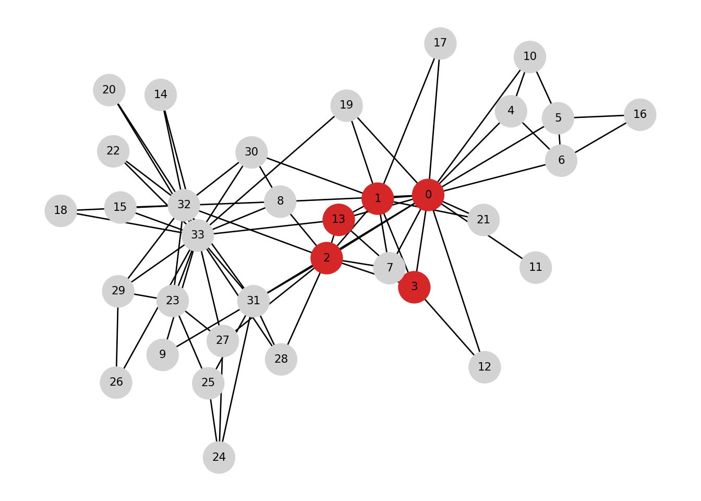
max_weight_clique(G, weight=...): Esta función busca una clique cuya suma de pesos de nodos sea máxima.
Nota: Aquí el peso normalmente se pone como atributo de nodo, por ejemplo:
G.nodes[n]["peso"] = ...
H = nx.Graph()
H.add_edges_from([
("A", "B"), ("A", "C"), ("B", "C"), # triángulo
("C", "D"), ("C", "E"), ("D", "E") # otro triángulo
])
pesos = {"A": 2, "B": 3, "C": 5, "D": 4, "E": 1}
nx.set_node_attributes(H, pesos, "peso")
clique_pesada, peso_total = nx.max_weight_clique(H, weight="peso")
clique_pesada, peso_total## (['E', 'D', 'C'], 10)La función devuelve: 1. la clique con mayor suma de pesos 2. el peso total de esa clique
2.2.2.2 Comunidades con k-cliques
Una comunidad de k-cliques se define como la unión de todas las cliques de tamaño \(k\) que pueden alcanzarse entre sí mediante una secuencia de k-cliques “adyacentes”, donde la adyacencia significa que las cliques comparten \(k-1\) nodos.
Este enfoque permite la existencia de comunidades traslapadas, ya que un mismo nodo puede pertenecer a múltiples cliques y, por lo tanto, a múltiples comunidades.
## [frozenset({0, 1, 2, 3, 7, 8, 12, 13, 14, 15, 17, 18, 19, 20, 21, 22, 23, 26, 27, 28, 29, 30, 31, 32, 33}), frozenset({0, 4, 5, 6, 10, 16}), frozenset({24, 25, 31})]Ejercicio 1: Construye nx.path_graph(5).
- Lista todas las cliques.
- Lista las cliques maximales.
- ¿Cuál es el tamaño de la clique máxima?
Ejercicio 2: Construye un grafo con aristas:
(1,2), (2,3), (1,3), (3,4), (4,5), (3,5)
- Encuentra las cliques maximales.
- ¿Cuántos triángulos hay?
- ¿Qué nodo pertenece a más cliques maximales?
Ejercicio 3: En el grafo nx.cycle_graph(6):
- ¿Qué cliques maximales aparecen?
- ¿Hay alguna clique de tamaño 3?
- Explica por qué.
Ejercicio 4: Usa nx.karate_club_graph():
- Encuentra una clique máxima.
- Calcula cuántas cliques maximales hay.
- Identifica los nodos con mayor
number_of_cliques.
Ejercicio 5: Explica con tus palabras la diferencia entre: - clique - clique maximal - clique máxima
2.2.2.3 k-componentes
Vamos a ver dos herramientas de conectividad avanzada:
nx.k_edge_components(G, k)nx.k_components(G)
La idea es medir qué tan robusta es una red cuando fallan aristas o nodos.
Para eso, vamos a crear una función que nos ayudará a hacer primero los plots.
plt.rcParams["figure.figsize"] = (6, 4)
def dibuja(G, pos=None, title=None):
if pos is None:
pos = nx.spring_layout(G, seed=7)
nx.draw(G, pos, with_labels=True, node_size=900, font_size=11)
if title:
plt.title(title)
plt.show()
return posConectividad por aristas: Mide cuántas aristas hay que quitar como mínimo para desconectar una red.
Conectividad por nodos: Mide cuántos nodos hay que quitar como mínimo para desconectar una red.
k_edge_components: Un k-edge-component es un conjunto maximal de nodos tal que cualquier par está conectado por al menoskcaminos independientes por aristas.k_components: Un k-component es un subgrafo maximal cuya conectividad por nodos es al menosk.
Ejemplo 1: un triángulo con una cola
G = nx.Graph()
G.add_edges_from([
(1, 2), (2, 3), (1, 3),
(3, 4)
])
pos = {1:(0,1), 2:(1,1), 3:(0.5,0), 4:(1.8,0)}
dibuja(G, pos, "Ejemplo 1")## {1: (0, 1), 2: (1, 1), 3: (0.5, 0), 4: (1.8, 0)}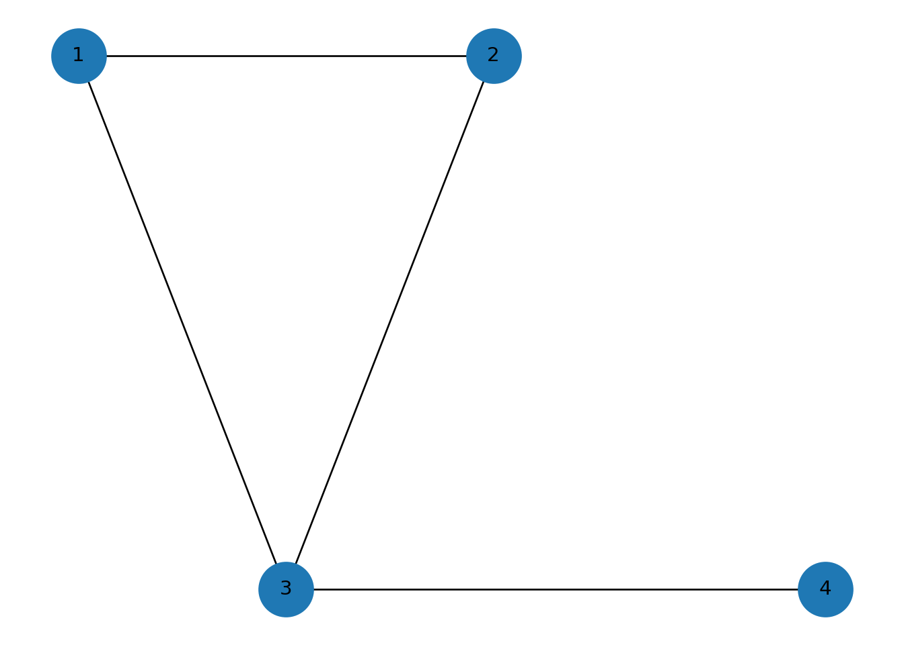
## k-edge-components con k=1:## [{1, 2, 3, 4}]##
## k-edge-components con k=2:## [{1, 2, 3}, {4}]##
## edge_connectivity global: 1## node_connectivity global: 1##
## k-components:## {2: [{1, 2, 3}], 1: [{1, 2, 3, 4}]}Interpretación:
- con k=1, toda la red está conectada;
- con k=2, el nodo 4 se separa, porque depende de una sola arista puente.
Ejemplo 2: dos triángulos compartiendo un vértice
H = nx.Graph()
H.add_edges_from([
(1,2), (2,3), (1,3),
(3,4), (4,5), (3,5)
])
posH = {1:(0,1), 2:(1,1), 3:(0.5,0), 4:(1.8,1), 5:(2.3,0)}
dibuja(H, posH, "Dos triángulos compartiendo un vértice")## {1: (0, 1), 2: (1, 1), 3: (0.5, 0), 4: (1.8, 1), 5: (2.3, 0)}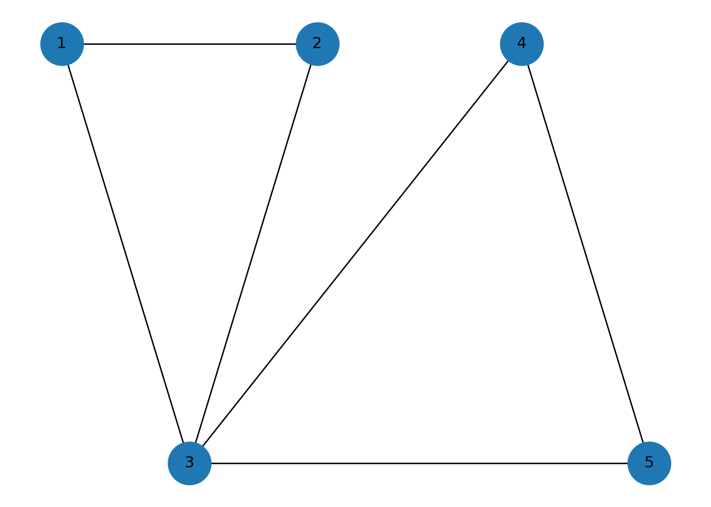
## k=1 -> [{1, 2, 3, 4, 5}]
## k=2 -> [{1, 2, 3, 4, 5}]##
## k-components:## {2: [{3, 4, 5}, {1, 2, 3}], 1: [{1, 2, 3, 4, 5}]}##
## Puntos de articulación:## [3]Ejemplo 3: un ciclo.
## {0: array([1., 0.]), 1: array([0.30901695, 0.95105657]), 2: array([-0.80901706, 0.58778526]), 3: array([-0.809017 , -0.58778532]), 4: array([ 0.3090171 , -0.95105651])}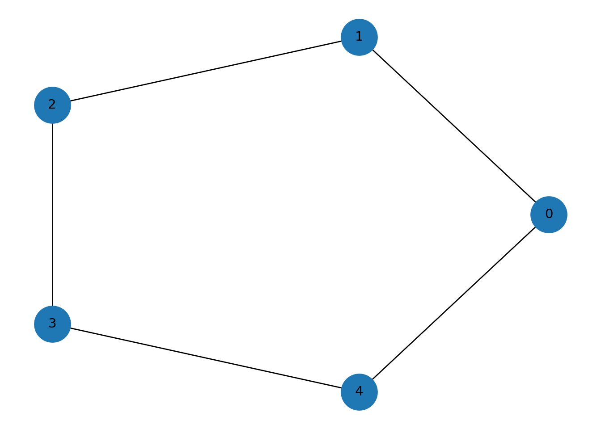
## edge_connectivity: 2## node_connectivity: 2## 2-edge-components: [{0, 1, 2, 3, 4}]## k-components: {2: [{0, 1, 2, 3, 4}], 1: [{0, 1, 2, 3, 4}]}En un ciclo la conectividad sube a 2: no basta quitar una sola arista o un solo nodo para romperlo de la misma forma que un camino.
Ejemplo 4: un camino
## {0: (0, 0), 1: (1, 0), 2: (2, 0), 3: (3, 0), 4: (4, 0)}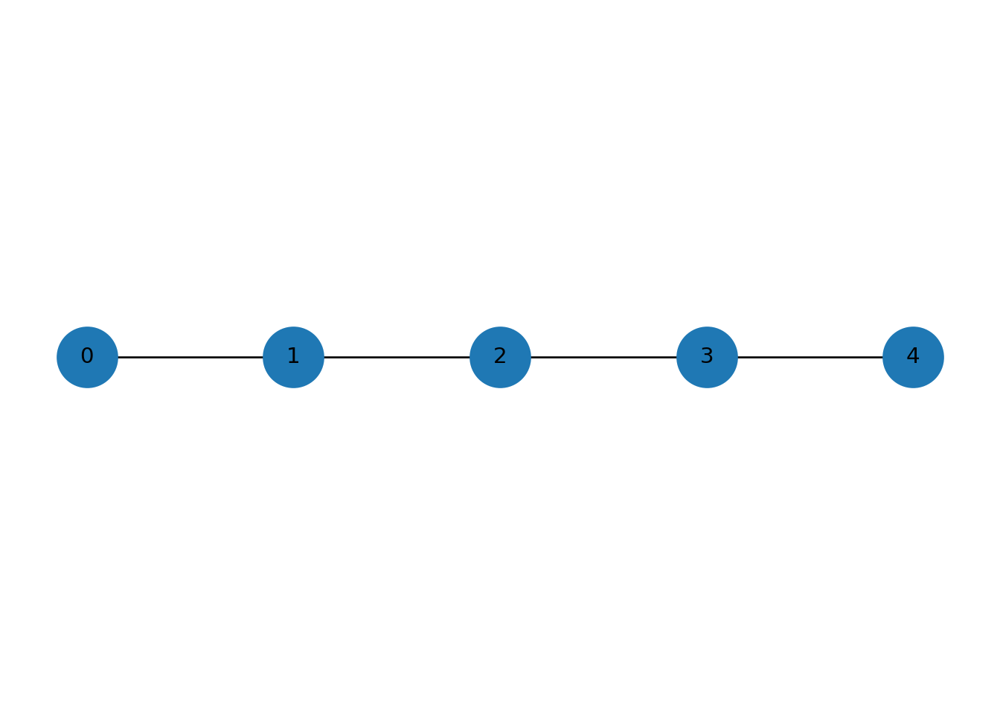
## edge_connectivity: 1## node_connectivity: 1## k-edge-components k=1: [{0, 1, 2, 3, 4}]## k-edge-components k=2: [{0}, {1}, {2}, {3}, {4}]## k-components: {1: [{0, 1, 2, 3, 4}]}Ejemplo 5: barbell graph (dos gráficas completas conectadas con una trayectoria)
## {0: array([-0.32310106, 0.78248598]), 1: array([-0.32040128, 0.95499698]), 2: array([-0.13266887, 0.99916538]), 3: array([-0.05388807, 0.84415541]), 4: array([-0.13566942, 0.58144151]), 6: array([ 0.13508483, -0.58116064]), 7: array([ 0.13207725, -1. ]), 8: array([ 0.31889515, -0.95413122]), 9: array([ 0.05641976, -0.84291756]), 10: array([ 0.32529103, -0.78185808]), 5: array([-0.0020393 , -0.00217775])}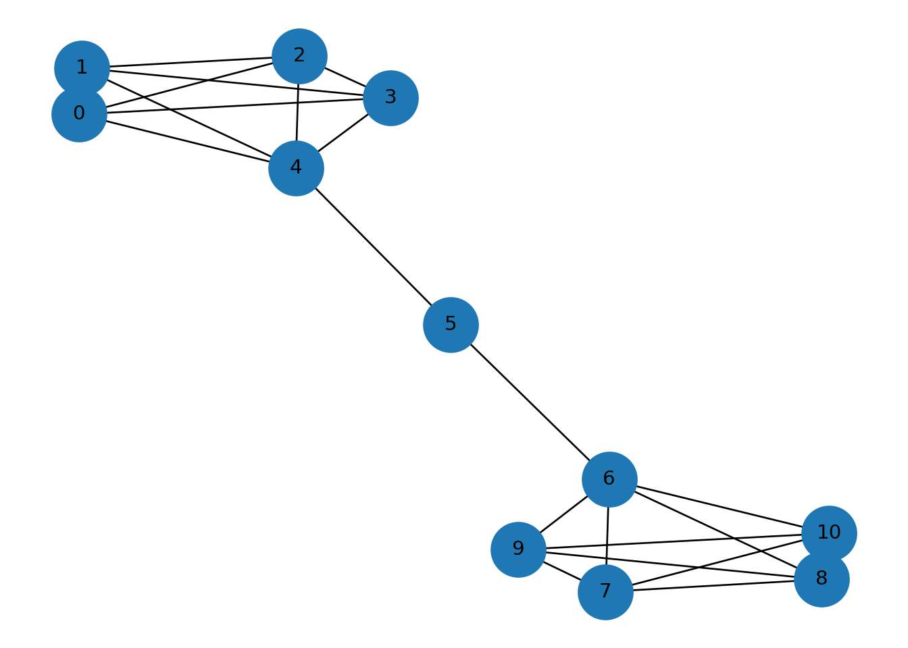
## edge_connectivity: 1## node_connectivity: 1## 2-edge-components: [{0, 1, 2, 3, 4}, {6, 7, 8, 9, 10}, {5}]## k-components: {4: [{6, 7, 8, 9, 10}, {0, 1, 2, 3, 4}], 3: [{6, 7, 8, 9, 10}, {0, 1, 2, 3, 4}], 2: [{6, 7, 8, 9, 10}, {0, 1, 2, 3, 4}], 1: [{0, 1, 2, 3, 4, 5, 6, 7, 8, 9, 10}]}## Puentes: [(4, 5), (6, 5)]## Puntos de articulación: [6, 5, 4]Parámetros principales
nx.k_edge_components(G, k)G: grafo de NetworkXk: entero positivo, nivel de conectividad por aristas
Devuelve un generador de conjuntos de nodos.
nx.k_components(G)G: grafo de NetworkX
Devuelve un diccionario k -> lista de conjuntos de nodos.
Red clásica: Karate Club
## Nodos: 34## Aristas: 78## edge_connectivity: 1## node_connectivity: 1## k-components: {4: [{0, 33, 2, 3, 1, 32, 7, 8, 13, 30}], 3: [{0, 1, 2, 3, 7, 8, 13, 19, 23, 24, 25, 27, 28, 29, 30, 31, 32, 33}, {0, 4, 5, 6, 10}], 2: [{0, 1, 2, 3, 7, 8, 9, 12, 13, 14, 15, 17, 18, 19, 20, 21, 22, 23, 24, 25, 26, 27, 28, 29, 30, 31, 32, 33}, {0, 16, 4, 5, 6, 10}], 1: [{0, 1, 2, 3, 4, 5, 6, 7, 8, 9, 10, 11, 12, 13, 14, 15, 16, 17, 18, 19, 20, 21, 22, 23, 24, 25, 26, 27, 28, 29, 30, 31, 32, 33}]}## {0: array([ 0.34991475, -0.06395483]), 1: array([0.21174643, 0.04780074]), 2: array([ 0.05774986, -0.00207082]), 3: array([0.30908619, 0.15259011]), 4: array([ 0.62562658, -0.17485918]), 5: array([ 0.76450508, -0.13242846]), 6: array([ 0.74255165, -0.04369998]), 7: array([0.30170664, 0.02809401]), 8: array([-0.09068362, 0.03570647]), 9: array([-0.18447112, 0.3705388 ]), 10: array([ 0.7067348 , -0.27571043]), 11: array([ 0.51749065, -0.37680164]), 12: array([0.52027246, 0.32693584]), 13: array([0.08293482, 0.08414193]), 14: array([-0.43044456, 0.34474545]), 15: array([-0.55753249, 0.1152523 ]), 16: array([ 1. , -0.09313679]), 17: array([ 0.35716317, -0.33266865]), 18: array([-0.72717141, 0.1776734 ]), 19: array([0.15293951, 0.22332509]), 20: array([-0.58259115, 0.36029835]), 21: array([0.52595257, 0.12219228]), 22: array([-0.55417777, 0.2407204 ]), 23: array([-0.45626333, -0.10627539]), 24: array([-0.38222223, -0.43015291]), 25: array([-0.39712187, -0.28639985]), 26: array([-0.7429417 , -0.06314925]), 27: array([-0.31480568, -0.18223246]), 28: array([-0.11319854, -0.20631236]), 29: array([-0.5994418 , -0.02820555]), 30: array([-0.15488408, 0.156498 ]), 31: array([-0.21721249, -0.15111497]), 32: array([-0.38608436, 0.09838743]), 33: array([-0.33512698, 0.06427292])}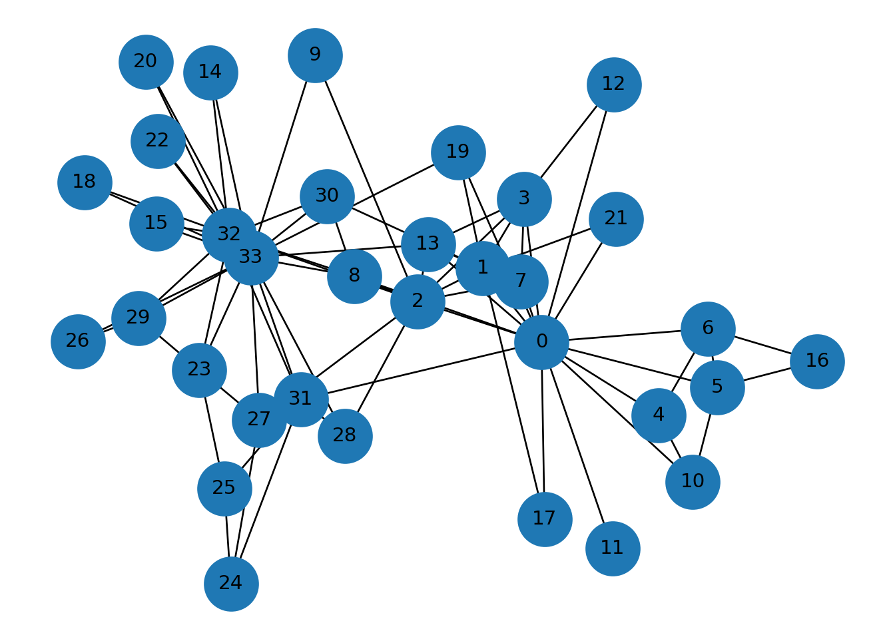
Ejercicio 1 Construye nx.path_graph(6) y calcula:
1. edge_connectivity
2. node_connectivity
3. k_edge_components para k=1 y k=2
Ejercicio 2: Construye nx.cycle_graph(6) y compáralo con el camino.
Ejercicio 3: Construye la gráfica con aristas:
(1,2), (2,3), (3,1), (3,4), (4,5), (5,6), (6,4)
- Dibuja la red.
- Calcula
list(nx.k_edge_components(G, k=2)). - Calcula
nx.k_components(G).
Ejercicio 4: Usa nx.barbell_graph(4,2) y encuentra:
1. puentes
2. puntos de articulación
3. sus k_edge_components y k_components
2.2.3 Transitividad y Coeficiente de Clustering
Existen varias funciones en networkx relacionadas a este tema:
nx.trianglesnx.all_trianglesnx.transitivitynx.clusteringnx.average_clusteringnx.square_clusteringnx.generalized_degree
Estas funciones sirven para estudiar triángulos y agrupamiento local/global en redes.
Ejemplo base: un triángulo con una cola
G = nx.Graph()
G.add_edges_from([(1,2), (2,3), (1,3), (3,4)])
pos = {1:(0,1), 2:(1,1), 3:(0.5,0), 4:(1.8,0)}
dibuja(G, pos, "Triángulo con una cola")## {1: (0, 1), 2: (1, 1), 3: (0.5, 0), 4: (1.8, 0)}
nx.triangles(G, nodes=None)
## {1: 1, 2: 1, 3: 1, 4: 0}## Triángulos que pasan por 3: 1## Triángulos que pasan por 4: 0nx.all_triangles(G, nbunch=None)
## [(1, 2, 3)]nx.clustering(G, nodes=None, weight=None)
## {1: 1.0, 2: 1.0, 3: 0.3333333333333333, 4: 0}## nodo 1: grado=2, clustering=1.000
## nodo 2: grado=2, clustering=1.000
## nodo 3: grado=3, clustering=0.333
## nodo 4: grado=1, clustering=0.000El clustering local mide qué proporción de pares de vecinos de un nodo también están conectados entre sí.
nx.average_clustering(G, ..., count_zeros=True)
## Promedio incluyendo ceros: 0.5833333333333334## Promedio sin contar ceros: 0.7777777777777778nx.transitivity(G)
## Transitivity: 0.6## Average clustering: 0.5833333333333334average_clustering y transitivity no son exactamente lo mismo:
- el primero promedia nodo por nodo;
- el segundo es una medida global basada en tríadas y triángulos.
- Comparación con un ciclo sin triángulos:
## {0: array([1., 0.]), 1: array([0.30901695, 0.95105657]), 2: array([-0.80901706, 0.58778526]), 3: array([-0.809017 , -0.58778532]), 4: array([ 0.3090171 , -0.95105651])}
## triangles: {0: 0, 1: 0, 2: 0, 3: 0, 4: 0}## all_triangles: []## clustering: {0: 0, 1: 0, 2: 0, 3: 0, 4: 0}## average_clustering: 0.0## transitivity: 0- Comparación con una clique completa
## {0: array([9.99999986e-01, 2.18556937e-08]), 1: array([-3.57647606e-08, 1.00000000e+00]), 2: array([-9.9999997e-01, -6.5567081e-08]), 3: array([ 1.98715071e-08, -9.99999956e-01])}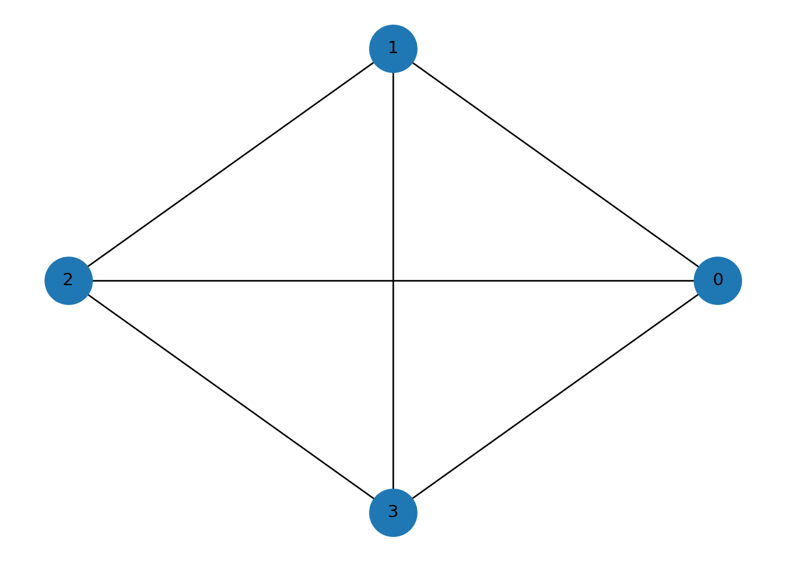
## triangles: {0: 3, 1: 3, 2: 3, 3: 3}## all_triangles: [(0, 1, 2), (0, 1, 3), (0, 2, 3), (1, 2, 3)]## clustering: {0: 1.0, 1: 1.0, 2: 1.0, 3: 1.0}## average_clustering: 1.0## transitivity: 1.0- Dos triángulos compartiendo un nodo
H = nx.Graph()
H.add_edges_from([(1,2), (2,3), (1,3), (3,4), (4,5), (3,5)])
posH = {1:(0,1), 2:(1,1), 3:(0.5,0), 4:(1.8,1), 5:(2.3,0)}
dibuja(H, posH, "Dos triángulos compartiendo un nodo")## {1: (0, 1), 2: (1, 1), 3: (0.5, 0), 4: (1.8, 1), 5: (2.3, 0)}
## triangles: {1: 1, 2: 1, 3: 2, 4: 1, 5: 1}## all_triangles: [(1, 2, 3), (3, 4, 5)]## clustering: {1: 1.0, 2: 1.0, 3: 0.3333333333333333, 4: 1.0, 5: 1.0}## average_clustering: 0.8666666666666666## transitivity: 0.6nx.square_clustering(G, nodes=None): puede detectar estructura cuadrada incluso cuando no hay triángulos.
## {0: array([9.99999986e-01, 2.18556937e-08]), 1: array([-3.57647606e-08, 1.00000000e+00]), 2: array([-9.9999997e-01, -6.5567081e-08]), 3: array([ 1.98715071e-08, -9.99999956e-01])}## triangles: {0: 0, 1: 0, 2: 0, 3: 0}## clustering: {0: 0, 1: 0, 2: 0, 3: 0}## square_clustering: {0: 1.0, 1: 1.0, 2: 1.0, 3: 1.0}nx.generalized_degree(G, nodes=None): El grado generalizado refina el grado usual según cuántos triángulos comparte cada arista incidente.
## {1: Counter({1: 2}), 2: Counter({1: 2}), 3: Counter({1: 4}), 4: Counter({1: 2}), 5: Counter({1: 2})}## nodo 1: Counter({1: 2})
## nodo 2: Counter({1: 2})
## nodo 3: Counter({1: 4})
## nodo 4: Counter({1: 2})
## nodo 5: Counter({1: 2})- Versión con pesos
W = nx.Graph()
W.add_weighted_edges_from([
(1,2,3.0),
(2,3,2.0),
(1,3,1.0),
(3,4,5.0)
])
posW = {1:(0,1), 2:(1,1), 3:(0.5,0), 4:(1.8,0)}
dibuja(W, posW, "Red con pesos")## {1: (0, 1), 2: (1, 1), 3: (0.5, 0), 4: (1.8, 0)}
## Clustering sin pesos:## {1: 1.0, 2: 1.0, 3: 0.3333333333333333, 4: 0}##
## Clustering con pesos:## {1: 0.3634241185664279, 2: 0.3634241185664279, 3: 0.12114137285547598, 4: 0}##
## Promedio sin pesos: 0.5833333333333334## Promedio con pesos: 0.21199740249708296Red clásica: Karate Club:
## Número de nodos: 34## Número de aristas: 78## Average clustering: 0.5706384782076823## Transitivity: 0.2556818181818182## Algunos valores de triangles:## 0 18
## 1 12
## 2 11
## 3 10
## 4 2
## 5 3
## 6 3
## 7 6
## 8 5
## 9 0## {0: array([ 0.34991475, -0.06395483]), 1: array([0.21174643, 0.04780074]), 2: array([ 0.05774986, -0.00207082]), 3: array([0.30908619, 0.15259011]), 4: array([ 0.62562658, -0.17485918]), 5: array([ 0.76450508, -0.13242846]), 6: array([ 0.74255165, -0.04369998]), 7: array([0.30170664, 0.02809401]), 8: array([-0.09068362, 0.03570647]), 9: array([-0.18447112, 0.3705388 ]), 10: array([ 0.7067348 , -0.27571043]), 11: array([ 0.51749065, -0.37680164]), 12: array([0.52027246, 0.32693584]), 13: array([0.08293482, 0.08414193]), 14: array([-0.43044456, 0.34474545]), 15: array([-0.55753249, 0.1152523 ]), 16: array([ 1. , -0.09313679]), 17: array([ 0.35716317, -0.33266865]), 18: array([-0.72717141, 0.1776734 ]), 19: array([0.15293951, 0.22332509]), 20: array([-0.58259115, 0.36029835]), 21: array([0.52595257, 0.12219228]), 22: array([-0.55417777, 0.2407204 ]), 23: array([-0.45626333, -0.10627539]), 24: array([-0.38222223, -0.43015291]), 25: array([-0.39712187, -0.28639985]), 26: array([-0.7429417 , -0.06314925]), 27: array([-0.31480568, -0.18223246]), 28: array([-0.11319854, -0.20631236]), 29: array([-0.5994418 , -0.02820555]), 30: array([-0.15488408, 0.156498 ]), 31: array([-0.21721249, -0.15111497]), 32: array([-0.38608436, 0.09838743]), 33: array([-0.33512698, 0.06427292])}
Ejercicio 1: Construye nx.path_graph(6).
- Calcula
nx.triangles. - Calcula
nx.clustering. - Calcula
nx.average_clusteringynx.transitivity. - Explica por qué.
Ejercicio 2: Construye nx.cycle_graph(6) y compáralo con nx.cycle_graph(4).
- ¿Qué pasa con
clustering? - ¿Qué pasa con
square_clustering?
Ejercicio 3: Construye una gráfica con aristas:
(1,2), (2,3), (3,1), (3,4), (4,5), (5,3), (5,6).
- Dibuja la red.
- Encuentra todos los triángulos.
- Calcula el clustering de cada nodo.
- ¿Qué nodo participa en más triángulos?
Ejercicio 4: Usa nx.complete_graph(5).
- ¿Cuántos triángulos toca cada nodo?
- ¿Cuál es el average clustering?
- ¿Cuál es la transitividad?
Ejercicio 5: Construye una red con pesos donde haya un triángulo fuerte y otro débil.
- Calcula clustering sin pesos.
- Calcula clustering con pesos.
- Interpreta la diferencia.
2.2.4 Homofilia y Asortatividad en Redes
Existen varias funciones relacionadas al tema de asortatividad en NetworkX.
Funciones principales son:
nx.degree_assortativity_coefficientnx.degree_pearson_correlation_coefficientnx.attribute_assortativity_coefficientnx.numeric_assortativity_coefficientnx.average_neighbor_degreenx.average_degree_connectivitynx.attribute_mixing_matrixnx.degree_mixing_matrixnx.attribute_mixing_dictnx.degree_mixing_dictnx.node_attribute_xynx.node_degree_xynx.modularity
La asortatividad mide si los nodos tienden a conectarse con otros nodos similares o distintos.
Ejemplos: - por grado: nodos muy conectados con otros muy conectados; - por atributo categórico: nodos del mismo grupo conectándose entre sí; - por atributo numérico: nodos con valores parecidos conectándose entre sí.
Interpretación típica: - valor positivo: mezcla entre similares; - valor cercano a 0: sin patrón claro; - valor negativo: mezcla entre diferentes.
Ejemplo base: red con atributos
Primero crearemos otra función para gráficar estas redes.
plt.rcParams["figure.figsize"] = (6, 4)
def dibuja_colors(G, pos=None, title=None, node_color="lightblue"):
if pos is None:
pos = nx.spring_layout(G, seed=7)
nx.draw(G, pos, with_labels=True, node_size=900, font_size=11, node_color=node_color)
if title:
plt.title(title)
plt.show()
return posG = nx.Graph()
G.add_edges_from([
(1,2), (1,3), (2,3),
(3,4), (4,5), (5,6), (4,6)
])
attrs = {
1: {"group":"A", "score":10},
2: {"group":"A", "score":12},
3: {"group":"A", "score":11},
4: {"group":"B", "score":30},
5: {"group":"B", "score":28},
6: {"group":"B", "score":32},
}
nx.set_node_attributes(G, attrs)
pos = {
1:(0,1), 2:(1,1), 3:(0.5,0),
4:(2.2,0), 5:(3.0,1), 6:(3.0,-1)
}
colors = ["tab:orange" if G.nodes[n]["group"]=="A" else "tab:green" for n in G.nodes()]
dibuja_colors(G, pos, "Red con atributos", node_color=colors)## {1: (0, 1), 2: (1, 1), 3: (0.5, 0), 4: (2.2, 0), 5: (3.0, 1), 6: (3.0, -1)}## (1, {'group': 'A', 'score': 10})
## (2, {'group': 'A', 'score': 12})
## (3, {'group': 'A', 'score': 11})
## (4, {'group': 'B', 'score': 30})
## (5, {'group': 'B', 'score': 28})
## (6, {'group': 'B', 'score': 32})- Asortatividad por grado: Estas funciones miden si nodos con cierto grado tienden a conectarse con nodos de grado parecido.
## degree_assortativity_coefficient: -0.16666666666666508## degree_pearson_correlation_coefficient: -0.16666666666666669Los nodos más conectados (grado 3) se conectan más veces con nodos menos conectados (grado 2) que con nodos de su mismo grado.
Otro ejemplo comparativo: estrella.
## {0: array([ 0.00044569, -0.00253284]), 1: array([0.49392508, 0.88222637]), 2: array([-0.91602171, -0.42407905]), 3: array([ 0.98968221, -0.19825987]), 4: array([-0.68645929, 0.74264539]), 5: array([ 0.11842802, -1. ])}## degree_assortativity_coefficient: -1.0## degree_pearson_correlation_coefficient: -0.9999999999999999En una estrella, un nodo de grado alto se conecta con muchos nodos de grado bajo, así que suele aparecer asortatvidad negativa por grado.
compl = nx.complete_graph(5)
posS = nx.spring_layout(compl, seed=4)
dibuja(compl, posS, "Star graph")## {0: array([0.99524862, 0.18895047]), 1: array([0.12470072, 1. ]), 2: array([-0.68687733, -0.73506634]), 3: array([ 0.4841821 , -0.88141923]), 4: array([-0.91725411, 0.4275351 ])}## degree_assortativity_coefficient: nan## degree_pearson_correlation_coefficient: nanLa asortatividad mide correlación entre grados. Si todos los grados son iguales, no hay correlación que medir.
Un ejemplo más.
G2 = nx.Graph()
# clique A
G2.add_edges_from([(1,2),(1,3),(1,4),(2,3),(2,4),(3,4)])
# clique B
G2.add_edges_from([(5,6),(5,7),(5,8),(6,7),(6,8),(7,8)])
# conexiones balanceadas
G2.add_edges_from([
(1,5),
(2,6),
(3,7),
(4,8)
])
pos = nx.spring_layout(G2, seed=4)
dibuja(G2, pos)## {1: array([ 0.6003223, -0.8788604]), 2: array([ 0.99788229, -0.15917957]), 3: array([0.40174659, 0.02259879]), 4: array([-0.06840213, -0.7561424 ]), 5: array([-0.40284 , -0.02452335]), 6: array([0.07006553, 0.75857934]), 7: array([-0.59877458, 0.87509219]), 8: array([-1. , 0.16243539])}
## degree_assortativity_coefficient: nan## degree_pearson_correlation_coefficient: nan- Asortatividad por atributo categórico:
## Assortativity por atributo 'group': 0.7142857142857143- Asortatividad por atributo numérico:
## Assortativity numérica para 'score': 0.6953642384105958- Modularidad:
## 0.35714285714285715- Ejemplo: Los conjuntos de datos
schoolfriends_verticesyschoolfriends_edgelistdel paqueteonadata(o disponibles para descarga en línea) representan una red de amistades reportadas entre estudiantes de una escuela secundaria en Marsella, Francia, en 2013.
El conjunto de vértices proporciona, para cada estudiante, su identificador (ID), clase y género. Por otro lado, la lista de aristas incluye dos tipos de relaciones:
Amistad reportada: cuando el estudiante con ID de origen (
from) declara al estudiante con ID de destino (to) como su amigo.Amistad en Facebook: cuando existe una conexión confirmada en Facebook entre ambos estudiantes.
Ejemplo tomado de Handbook of Graphs and Networks in People Analytics, Capítulo 8
import pandas as pd
schoolfriends_edgelist = pd.read_csv(
"https://ona-book.org/data/schoolfriends_edgelist.csv"
)
schoolfriends_vertices = pd.read_csv(
"https://ona-book.org/data/schoolfriends_vertices.csv"
)
# Creamos una gráfica no dirigida de Facebook
schoolfriends_fb = nx.from_pandas_edgelist(
df = schoolfriends_edgelist[
schoolfriends_edgelist.type == 'facebook'
],
source = "from",
target = "to"
)
# Creamos una gráfica dirigida de las amistades reportadas
schoolfriends_rp = nx.from_pandas_edgelist(
df = schoolfriends_edgelist[
schoolfriends_edgelist.type == 'reported'
],
source = "from",
target = "to",
create_using=nx.DiGraph()
)
# Agregamos los atributos de las clases de vértices a ambas gráficas
class_attr = dict(zip(schoolfriends_vertices['id'], schoolfriends_vertices['class']))
nx.set_node_attributes(schoolfriends_fb, name = "class", values = class_attr)
nx.set_node_attributes(schoolfriends_rp, name = "class", values = class_attr)
nx.draw(schoolfriends_fb)Podemos calcular varios tipos de asortatividades:
## 0.3833666875368265## 0.7188918572576617## 0.3098122648040653## 0.02462443563586026Ejercicios:
Calcula el coeficiente de asortatividad para el género.
Calcula el coeficiente de asortatividad para el departamento.
2.2.5 Ejercicios
Ejercicio 1: análisis estructural de una red de personajes de película
Usa la red de personajes de una película obtenida de MovieGalaxies (por ejemplo, Toy Story). Carga la red en networkx y responde lo siguiente.
Parte 1. Exploración básica Indica:
número de nodos,
número de aristas,
si la red es conexa o no.
Si no es conexa, reporta:
cuántas componentes conexas tiene,
el tamaño de cada componente,
cuál es la componente gigante.
Parte 2. Centralidad
Calcula las siguientes medidas de centralidad para todos los nodos:
centralidad de grado,
centralidad de cercanía,
centralidad de intermediación (betweenness),
centralidad de vector propio (eigenvector centrality), si es posible.
Después:
Reporta los 5 personajes más importantes según cada medida.
Compara los resultados:
¿coinciden los personajes más importantes en todas las medidas?
¿qué tipo de “importancia” parece capturar cada centralidad?
Parte 3. Cliques y cohesión local
Encuentra:
- el tamaño del clique máximo,
- un ejemplo de clique máximo,
- cuántos cliques maximales hay en total.
Interpreta el resultado:
¿qué representa un clique en esta red?
¿un clique grande sugiere una escena muy compartida entre personajes o una fuerte relación narrativa?
Parte 4. Conectividad global
Calcula la conectividad por nodos de la red.
Calcula la conectividad por aristas.
Encuentra un ejemplo de:
un conjunto mínimo de nodos cuya eliminación desconecte la red,
un conjunto mínimo de aristas cuya eliminación desconecte la red.
Interpreta:
¿la red parece robusta o frágil?
¿hay personajes “puente” cuya ausencia rompería la historia en comunidades separadas?
Parte 5. k-componentes
Calcula los k-componentes de la red.
Reporta:
qué valores de k aparecen,
cuántos k-componentes hay para cada k,
cuál es el valor máximo de k.
Explica:
¿qué significa que un subconjunto pertenezca a un k-componente?
¿qué nos dice esto sobre la cohesión de ciertos grupos de personajes?
Parte 6. Transitividad y clustering
Calcula la transitividad global de la red.
Calcula el coeficiente de clustering promedio.
Calcula el coeficiente de clustering local de cada nodo y reporta los 5 más altos.
Discute:
¿la red favorece triángulos?
¿los amigos de un personaje tienden también a relacionarse entre sí?
Parte 7. Asortatividad
- Calcula la asortatividad por grado.
Interpreta el signo del resultado:
si es positivo, ¿qué significa?
si es negativo, ¿qué significa en el contexto de personajes principales y secundarios?
Explica si el valor obtenido tiene sentido para una red de película.
Parte 8. Reflexión final
Redacta una breve conclusión contestando:
¿qué personajes parecen estructuralmente más importantes?
¿la red está organizada alrededor de uno o pocos protagonistas?
¿hay evidencia de grupos muy cohesionados?
¿la red se parece más a una historia coral o a una historia centrada en pocos personajes?
2.3 Estructura de Redes Empíricas - La estructura de las redes del mundo real
2.3.2 Ejercicio 2: Red de colaboración científica (arXiv)
Descripción: En esta práctica se analizará una red de colaboración científica. Cada nodo representa un autor y existe una arista entre dos nodos si los autores han colaborado en al menos un artículo.
El objetivo es estudiar cómo se organizan las colaboraciones científicas desde el punto de vista de la teoría de redes.
Dataset
- Nombre: ca-GrQc
- Tipo: no dirigida
- Tamaño: 5,242 nodos, ~14k aristas
- Interpretación: nodos = autores, aristas = coautoría
Descarga: https://snap.stanford.edu/data/ca-GrQc.html
1. Análisis de componentes
- Determina el número de componentes conexas de la red.
- Identifica la componente conexa más grande.
- Calcula su tamaño y compáralo con el tamaño total de la red.
Preguntas:
- ¿La red está dominada por una componente gigante?
- ¿Existen muchos grupos pequeños aislados?
- ¿Qué interpretación tiene esto en términos de colaboración científica?
2. Caminos más cortos
- Trabaja con la componente gigante.
- Calcula la distancia media entre nodos.
- Calcula el diámetro de la red.
Preguntas:
- ¿Qué tan lejos están dos autores en promedio?
- ¿La red facilita la difusión de información o conocimiento?
- ¿Cómo se compara el diámetro con la distancia media?
3. Centralidades
- Calcula distintas medidas de centralidad (por ejemplo: grado, intermediación, vector propio).
- Identifica los nodos más importantes según cada medida.
Preguntas:
- ¿Coinciden los nodos más importantes según diferentes medidas?
- ¿Existen nodos que actúan como puentes entre comunidades?
- ¿Un nodo con muchos colaboradores es necesariamente el más influyente?
4. Distribución de grado
- Calcula la distribución de grado de la red.
- Grafica la distribución en escala lineal y en escala log-log.
Preguntas:
- ¿Existen autores con muchos colaboradores?
- ¿La distribución presenta una cola pesada?
- ¿Se observa evidencia de comportamiento tipo ley de potencia?
5. Coeficiente de clustering
- Calcula el coeficiente de clustering global.
- Analiza si los colaboradores de un autor tienden a colaborar entre sí.
Preguntas:
- ¿La red presenta estructura de comunidades?
- ¿El clustering es alto o bajo?
- ¿Qué indica esto sobre la dinámica de colaboración?
6. Comparación conceptual con la red social
Compara los resultados obtenidos en esta red con los de la red de Facebook.
Preguntas:
- ¿Cuál red tiene mayor clustering?
- ¿En cuál red los hubs son más evidentes?
- ¿Cuál red parece más homogénea?
- ¿Qué diferencias estructurales importantes observas entre una red social y una red de colaboración científica?